11email: bekki@mps.mpg.de 22institutetext: Institut für Astrophysik, Georg-August-Universtät Göttingen, Friedrich-Hund-Platz 1, 37077 Göttingen, Germany 33institutetext: Center for Space Science, NYUAD Institute, New York University Abu Dhabi, Abu Dhabi, UAE
نظرية التذبذبات الشمسية في نطاق الترددات العطالية:
الأنماط الخطية لمنطقة الحمل الحراري
الملخص
Context. من جهة، رُصدت على الشمس عدة أنواع من أنماط التذبذب العطالية ذات المقياس العالمي. وتشمل هذه الأنماط أنماط روسبي الاستوائية، وأنماط خطوط العرض الحرجة، وأنماط خطوط العرض العالية. ومن جهة أخرى، لا تزال الأنماط الحملية العمودية (المتنبأ بها في المحاكاة؛ والمعروفة أيضا باسم خلايا الموز أو موجات روسبي الحرارية) عصية على الرصد.
Aims. نهدف إلى دراسة تأثير الانتشاريات الاضطرابية، والتطبق غير الأديباتي، والدوران التفاضلي، وتدرج الإنتروبيا العرضي في الأنماط العالمية الخطية لمنطقة الحمل الشمسي الدوارة.
Methods. نحل عدديا أنماط القيم الذاتية لمائع قابل للانضغاط دوار داخل قشرة كروية. يأخذ النموذج في الحسبان التطبق الشمسي، والانتشاريات الاضطرابية، والدوران التفاضلي (المحدد بعلم الاهتزازات الشمسية)، وتدرج الإنتروبيا العرضي. وكنقطة بداية، نحصر أنفسنا في فوق-أديباتية وانتشاريات اضطرابية منتظمة مكانيا. نحدد أنماطا في نطاق الترددات العطالية تشمل الأنماط الحملية العمودية، إضافة إلى أنماط ذات طبيعة مختلطة. وتُحسب علاقات التشتت والدوال الذاتية المقابلة لهذه الأنماط للرتب السمتية .
Results. النتائج الرئيسية الثلاث هي كما يلي. أولا، نجد أنه، من أجل ، يتغير الاعتماد الشعاعي لأنماط روسبي الاستوائية عديمة العقدة الشعاعية () تغيرا جذريا عن التوقع التقليدي () عند انتشاريات اضطرابية cm2 s-1. ثانيا، نجد أنماطا مختلطة، أي أنماطا تشترك في خصائص أنماط روسبي الاستوائية ذات عقدة شعاعية واحدة () والأنماط الحملية العمودية، ولا تتأثر تأثرا جوهريا بالانتشار الاضطرابي. ثالثا، نبين أن نمط خط العرض العالي في النموذج يتسق مع الرصود الشمسية عند إدراج تدرج الإنتروبيا العرضي الموافق لتوازن الرياح الحرارية (نمط غير مستقر باروكلينيا).
Conclusions. على حد علمنا، يمثل هذا العمل أول حساب واقعي للقيم الذاتية للأنماط العالمية في منطقة الحمل الشمسي الدوارة. ويكشف هذا الحساب عن طيف غني من الأنماط في نطاق الترددات العطالية، يمكن مقارنته مباشرة بالرصد. وبالمقابل، يمكن للأنماط المرصودة أن تمدنا بمعلومات عن منطقة الحمل الشمسي.
Key Words.:
الحمل الحراري – الشمس: الباطن – الشمس: الدوران – الشمس: علم الاهتزازات الشمسية1 مقدمة
باستخدام 10 سنة من أرصاد Helioseismic and Magnetic Imager (HMI) على متن Solar Dynamics Observatory (SDO)، اكتشف Gizon et al. (2021) أن الشمس تدعم عددا كبيرا من الأنماط العالمية للتذبذبات العطالية. القوة المعيدة لهذه الأنماط العطالية هي قوة كوريوليس، ولذلك تكون للأنماط فترات تقارن بفترة الدوران الشمسي ( يوم). يمكن استخدام الأنماط العطالية، من حيث المبدأ، أداة لسبر باطن الشمس، لأنها حساسة لخصائص منطقة الحمل العميقة التي لا تتحسسها أنماط p. ولتحقيق هذا الهدف، نحتاج إلى فهم أفضل لفيزياء الأنماط.
1.1 الأنماط العطالية الشمسية
وُصفت الأنماط منخفضة التردد للتذبذب الشمسي في إطار دوار (سرعته الزاوية ). ولما كانت الشمس متناظرة أساسا حول محور دورانها، فإن سرعة كل نمط في الإطار الدوار تأخذ الصورة ، حيث هو نصف القطر، و هي زاوية التمام، و هو خط الطول، و هي الرتبة السمتية، و هو التردد الذاتي للنمط. يعرض Gizon et al. (2021) جميع الترددات الذاتية المرصودة لكل ، والدوال الذاتية ( و عند السطح) لعدد قليل من الأنماط المختارة.
تتألف العائلة الأولى من الأنماط العطالية المرصودة على الشمس من أنماط روسبي الاستوائية شبه الطوريدية (Löptien et al., 2018). وهي نظيرة لأنماط r القطاعية التي وصفها، مثلا، Papaloizou and Pringle (1978) وSmeyers et al. (1981) وSaio (1982). على الشمس تمتلك هذه الأنماط مع علاقة تشتت محددة جيدا قريبة من ، حيث هو التردد الزاوي للنمط و nHz هو معدل الدوران الاستوائي عند السطح. ولقيم الموجبة، تشير القيمة السالبة لـ إلى انتشار تراجعي. وقد أكدت عدة دراسات لاحقة هذه الرصود (مثلا، Liang et al., 2019; Hanasoge and Mandal, 2019; Proxauf et al., 2020; Hanson et al., 2020). وباستخدام نموذج أحادي البعد على مستوى مع جريان قصي قطعاني ولزوجة، يبين Gizon et al. (2020a) أن هذه الأنماط، من بين أنماط أخرى، تتأثر بالدوران التفاضلي وتنحصر بين خطوط العرض الحرجة حيث تساوي سرعة طور النمط السرعة الدورانية المحلية. وسّع Fournier et al. (2022) هذا النموذج إلى هندسة كروية باستخدام نموذج دوران تفاضلي واقعي، ووجد أن بعض أنماط روسبي قد تكون غير مستقرة من أجل .
كما أبلغ Gizon et al. (2021) عن عائلة من الأنماط عند خطوط العرض المتوسطة، تتموضع قرب خطوط عرضها الحرجة. وقد حُددت عدة عشرات من أنماط خطوط العرض الحرجة في المجال . وثمة عائلة أخرى من الأنماط العطالية يقدمها الدوران التفاضلي للشمس، هي أنماط خطوط العرض العالية (Gizon et al., 2021). النمط الأعلى مطال ( 10 - 20 m s-1 فوق خط العرض ) هو النمط ذو السرعة الطولية المضادة التناظر شمالا-جنوبا بالنسبة إلى خط الاستواء. هذا النمط حدده Gizon et al. (2021) باستخدام حسابات خطية في نموذج ثنائي الأبعاد، وتناقش هذه الحسابات بمزيد من التفصيل في هذه الورقة وفي Fournier et al. (2022). وهو يقابل سمة السرعة الشبيهة باللولب التي أبلغ عنها Hathaway et al. (2013) عند خطوط العرض العالية، مع أنها وُصفت هناك بأنها حمل خلايا عملاقة.
تنطوي أنماط روسبي الاستوائية وأنماط خطوط العرض العالية في معظمها على حركات طوريدية ذات سرعة شعاعية صغيرة مقارنة بمركبات السرعة الأفقية. ودُرست الأنماط العطالية غير الطوريدية نظريا أيضا، أساسا للموائع غير القابلة للانضغاط. تميل هذه الأنماط إلى التوضع على ما يسمى الجاذبات، وهي مدارات دورية مغلقة للأشعة المنعكسة عن الحدود الكروية (Maas and Lam, 1995; Rieutord and Valdettaro, 1997; Rieutord et al., 2001; Rieutord and Valdettaro, 2018; Sibgatullin and Ermanyuk, 2019). كما تتأثر بشدة بخطوط العرض الحرجة عند إدراج الدوران التفاضلي (مثلا، Baruteau and Rieutord, 2013; Guenel et al., 2016).
1.2 الأنماط الحملية العمودية
في المحاكاة العددية للحمل الدوار الشبيه بالشمسي، تبرز أعمدة حمل استوائية مصطفة مع محور الدوران (مثلا، Miesch et al., 2008; Bessolaz and Brun, 2011; Matilsky et al., 2020). وتُعرف في الأدبيات باسم «أعمدة Busse» (بعد Busse, 1970)، أو «موجات روسبي الحرارية»، أو «خلايا الموز». ونسميها «الأنماط الحملية العمودية» في بقية هذه الورقة. تنتشر هذه الأعمدة الحملية في الاتجاه التقدمي إما بسبب «تأثير الطبوغرافي» الناشئ من الانحناء الهندسي (مثلا، Busse, 2002) أو بسبب «تأثير الانضغاطي» الناشئ من التطبق الكثافي القوي (Ingersoll and Pollard, 1982; Evonuk, 2008; Glatzmaier et al., 2009; Evonuk and Samuel, 2012; Verhoeven and Stellmach, 2014). اشتق Glatzmaier and Gilman (1981) عدديا علاقة التشتت والدوال الذاتية الشعاعية لهذه الأنماط الحملية باستخدام نموذج أسطوانة أحادي البعد. وقد بينوا أن النمط الأساسي () هو أسرع هذه الأنماط المنتشرة تقدميا، وله دالة ذاتية متموضعة قرب السطح، حيث يكون تأثير الانضغاطي في أقوى حالاته.
في نظام المعلمات الخاص بمختلف المحاكاة العددية، تكون الأنماط الحملية العمودية أكثر البنى كفاءة في نقل الطاقة الحرارية إلى الأعلى تحت قيد الدوران (مثلا، Gilman, 1986; Miesch et al., 2000; Brun et al., 2004; Miesch et al., 2008; Käpylä et al., 2011; Gastine et al., 2013; Hotta et al., 2015; Featherstone and Hindman, 2016; Matilsky et al., 2020; Hindman et al., 2020). وعلاوة على ذلك، كثيرا ما يُقال إن هذه الأنماط الحملية تؤدي دورا حاسما في نقل الزخم الزاوي نحو خط الاستواء للحفاظ على الدوران التفاضلي للشمس (مثلا، Gilman, 1986; Miesch et al., 2000; Balbus et al., 2009). لم تُكتشف الأنماط الحملية العمودية السائدة المرئية في المحاكاة في حقل السرعة عند سطح الشمس. غير أننا سنبين في هذه الورقة أن لبعض الأنماط العطالية التراجعية طبيعة مختلطة، وأنها تشترك في بعض الخصائص مع الحمل العمودي.
1.3 محور هذه الورقة
ندرس في هذه الورقة خصائص أنماط روسبي الاستوائية، والأنماط العطالية عند خطوط العرض العالية، والأنماط الحملية العمودية في النظام الخطي. وينصب اهتمامنا أساسا على تأثيرات الانتشار الاضطرابي، والدوران التفاضلي الشمسي، والتطبق غير الأديباتي في هذه الأنماط. لاحظ أن أنماط خطوط العرض الحرجة، التي يناقشها Fournier et al. (2022)، لن تُعالج بعمق في هذه الورقة.
أولا، سنبين أنه عندما تزيد اللزوجة الاضطرابية على نحو تقريبي عن cm2 s-1، فإن أنماط روسبي الاستوائية عديمة العقدة الشعاعية () تبتعد بقوة عن الاعتماد المتوقع، ولا تعود الدوامية الشعاعية عند السطح عظمى عند خط الاستواء لأعداد الموجة السمتية . ثانيا، نعرض صنفا جديدا من الأنماط ذات ترددات قريبة من تردد أنماط روسبي الكلاسيكية. وتشترك هذه الأنماط في خصائص كل من أنماط روسبي الاستوائية والأنماط الحملية. ثالثا، نقدم تفسيرا فيزيائيا لخصائص أنماط خطوط العرض العالية بدلالة عدم الاستقرار الباروكليني الناتج عن تدرج الإنتروبيا العرضي في منطقة الحمل.
تنظم الورقة على النحو الآتي. في §2 نحدد المعادلات الخطية ونحل مسألة القيم الذاتية. تُناقش الأنماط منخفضة التردد في §3 للحالة عديمة اللزوجة، ذات التطبق الأديباتي، والدوران المنتظم. ثم تناقش تأثيرات الانتشار الاضطرابي وخلفية ذات تطبق غير أديباتي في §4 و§5. ونناقش كيف يؤثر الدوران التفاضلي الشمسي والباروكلينية المصاحبة له في خصائص الأنماط في §6. وتُلخص النتائج في §7.
2 مسألة القيم الذاتية
من أجل دراسة خصائص مختلف الأنماط العطالية في الشمس، طُور كود عددي جديد. ننظر في المعادلات الهيدروديناميكية الخطية كاملة الانضغاط في إحداثيات كروية .
2.1 المعادلات الخطية
المعادلات الخطية للحركة والاستمرارية وحفظ الطاقة هي:
| (1) | |||
| (2) | |||
| (3) |
حيث إن هو اضطراب السرعة من الرتبة 1. في هذه الورقة، لا ننظر إلا في الدوران التفاضلي للجريان المتوسط ونهمل الدوران الزوالي. ومن ثم تكون سرعة الخلفية هي . هنا، دالة في و وتدل على معدل الدوران في منطقة الحمل الشمسي، و هو معدل دوران إطار الراصد. لاحظ أننا نبدأ في هذه الورقة، طلبا للبساطة، بتحليل الحالة من دون دوران تفاضلي وندرس الأنماط الخطية في شمس ذات دوران منتظم. في هذه الحالة، يمثل معدل دوران حالة الخلفية غير المضطربة. أما في الحالة ذات الدوران التفاضلي الشمسي، فنختار استخدام معدل دوران كارينغتون nHz.
يعطى النموذج غير المضطرب بواسطة و و و و، وهي الضغط والكثافة ودرجة الحرارة وتسارع الجاذبية وارتفاع مقياس الضغط في حالة الخلفية. وتفترض الخلفية متناظرة كرويا وفي توازن هيدروستاتيكي ذي تطبق أديباتي. كل هذه المتغيرات دوال في وحده. نستخدم النموذج التحليلي نفسه الذي استخدمه Rempel (2005) وBekki and Yokoyama (2017) لتطبق الخلفية، وهو يحاكي على نحو جيد النموذج الشمسي S (Christensen-Dalsgaard et al., 1996). تمثل المتغيرات ذات اللاحقة و و و اضطرابات الرتبة 1 في الضغط والكثافة والإنتروبيا المرتبطة باضطراب السرعة . وهنا، لإغلاق المعادلات، تُستخدم معادلة الحالة الخطية
| (4) |
حيث إن هو نسبة السعتين الحراريتين و يدل على السعة الحرارية النوعية عند حجم ثابت.
على الرغم من تقريب الخلفية بأنها أديباتية، يمكننا مع ذلك إدخال انحراف صغير عن التطبق الأديباتي بدلالة فوق-الأديباتية ، حيث إن هو تدرج درجة الحرارة اللوغاريتمي المزدوج. في منطقة الحمل الشمسي، تُقدر فوق-الأديباتية بأنها (مثلا، Ossendrijver, 2003). كذلك، عند إدراج الدوران التفاضلي الشمسي، قد نضيف تغيرا عرضيا في الإنتروبيا يرتبط بتوازن الرياح الحرارية للدوران التفاضلي (مثلا، Rempel, 2005; Miesch et al., 2006; Brun et al., 2011).
نفترض أن موتر الإجهاد اللزج، ، يعطى بـ
| (5) |
حيث إن هو موتر التشوه. انظر Fan and Fang (2014) (معادلاتهم من 8 إلى 13) للحصول على التعبيرات المفصلة لـ في الإحداثيات الكروية. يرمز إلى الانتشارية اللزجة والحرارية بـ و على الترتيب.
2.2 مسألة القيم الذاتية
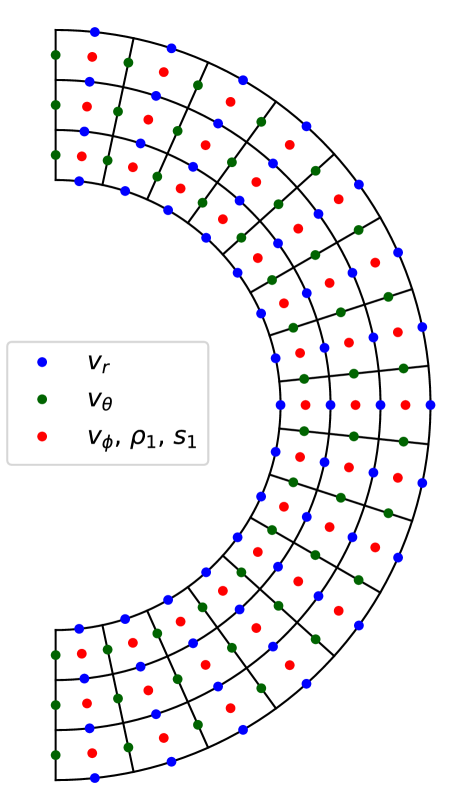
نفترض أن اعتماد و لجميع الاضطرابات و و و يعطى بالشكل الموجي ، حيث إن هي الرتبة السمتية (عدد صحيح) و هو التردد الزاوي المركب. وباستخدام هذا التمثيل، تعطي المعادلات (1)–(3)
| (6) | |||
| (7) | |||
| (8) | |||
| (9) | |||
| (10) |
حيث إن هي سرعة الصوت و هي السعة الحرارية النوعية الثابتة عند ضغط ثابت. هنا تكون السرعة الطولية ، واضطراب الكثافة ، واضطراب الإنتروبيا خارج الطور مع المركبات الزوالية للسرعة ( و) في الحد عديم اللزوجة ().
يمكن جمع المعادلات (6)–(10) في مسألة قيم ذاتية
| (11) |
حيث
| (17) |
و هو المؤثر التفاضلي الخطي الممثل بالطرف الأيمن من المعادلات (6)–(10). يعتمد المؤثر على الرتبة السمتية ومعلمات النموذج مثل الدوران التفاضلي ، وفوق-الأديباتية ، والانتشاريتين و.
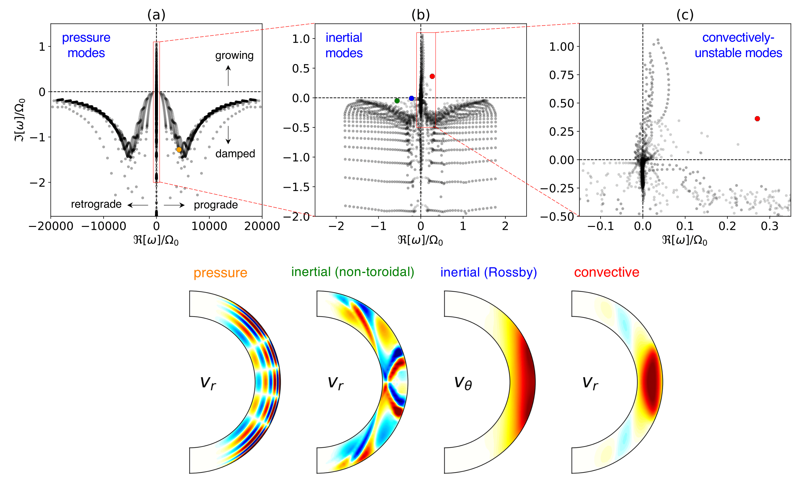
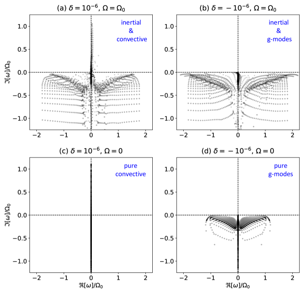
2.3 شروط الحد
في هذه الدراسة، نحصر مجالنا العددي من إلى في الاتجاه الشعاعي لتجنب التطبق الكثافي القوي قرب السطح الشمسي وأنماط الجاذبية في الباطن الإشعاعي. بسبب اللزوجة، لدينا في هذه المسألة أربع معادلات تفاضلية جزئية من الرتبة الثانية (في الاتجاهين الشعاعي والعرضي كليهما) ومعادلة تفاضلية جزئية واحدة من الرتبة الأولى. لا تزيد المعادلة (9) رتبة النظام لأن يمكن حذفه من النظام من دون زيادة رتبة المعادلات الأخرى. لذلك يلزم ثمانية شروط حدية في الاتجاه الشعاعي (أربعة عند الأعلى وأربعة عند الأسفل). عند الحدين العلوي والسفلي، نستخدم شروطا للسرعة غير نافذة وأفقية وخالية من الإجهاد، ونفترض عدم وجود فيض إنتروبيا () عبر الحد:
| (18) |
تُغطى جميع خطوط العرض في المخطط العددي، من القطب الشمالي () إلى القطب الجنوبي (). نحتاج إلى ثمانية شروط حدية أخرى في اتجاه . في الحالات غير المحورية التناظر ()، نفرض عند القطبين
| (19) |
لجعل الكميات أحادية القيمة. أما في الحالة المحورية التناظر ()، فنفترض بدلا من ذلك عند كلا القطبين
| (20) |
2.4 المخطط العددي
نحل عدديا مسألة القيم الذاتية أعلاه باستخدام طريقة الفروق المنتهية في المستوى الزوالي. نستخدم شبكات منتظمة مكانيا. الشبكات الخاصة بـ و و هي شبكات متداخلة مزاحة بنصف نقطة شبكية في نصف القطر لـ وبنصف نقطة شبكية في زاوية التمام لـ (اتباعا لـ Gilman, 1975)، كما يوضح الشكل 1. وتُقوَّم المشتقات المكانية بمخطط مركزي دقته من الرتبة الثانية. وبتحويل الشبكة ثنائية الأبعاد () إلى مصفوفة أحادية البعد بحجم لكل المتغيرات، يُعرّف كمتجه أحادي البعد بحجم . وبمجرد ضبط شروط الحد على نحو صحيح، يمكن إنشاء كمصفوفة مركبة ثنائية الأبعاد بحجم يقارب (). هذه الطريقة مشابهة لطريقة Guenther and Gilman (1985). عمليا، يمكن حساب كل عنصر من بإدخال متجه وحدة مناظر في الطرف الأيمن من المعادلات (6)–(10). في معظم الحسابات، نستخدم دقة شبكة قدرها . أجرينا أيضا حسابات أعلى دقة مع لحالة الدوران المنتظم للتحقق من تقارب النتائج مع الشبكة. عند زيادة دقة الشبكة، يزداد العدد الكلي للأنماط الذاتية تبعا لذلك. وتكون للأنماط الإضافية أعداد موجية شعاعية وعرضية أعلى، وتكون أدق بنية. ولتفسير الأنماط كبيرة المقياس التي رُصدت على الشمس، تكون النتائج متقاربة عند .
نستخدم روتينات LAPACK (Anderson et al., 1999) لحساب القيم الذاتية والمتجهات الذاتية لـ عدديا، الموافقة لترددات الأنماط والدوال الذاتية للأنماط الخطية في الشمس. في هذه الدراسة، نقصر مجال الرتب السمتية على ونسمح للتردد الحقيقي بأن يأخذ قيمة سالبة. وهذا يعني أن يقابل أنماطا منتشرة تراجعيا وأن يقابل أنماطا نامية أسيا.
| Classification | peak location | north-south | propagation | sections | |||
|---|---|---|---|---|---|---|---|
| of kinetic energy | symmetries | direction | discussed | ||||
| Equatorial Rossby () | equator | A | S | A | retrograde | § 3.1.1, § 4, § 6.1 | |
| Equatorial Rossby () | equator | A | S | A | retrograde | § 3.1.2, § 6.1 | |
| Columnar convective (-sym) | equator | S | A | S | prograde | § 3.2.1, § 5 | |
| Columnar convective (-antisym) | equator | A | S | A | prograde | § 3.2.2 | |
| High latitude (-sym) | near poles | S | A | S | retrograde | § 3.3.1 | |
| High latitude (-antisym) | near poles | A | S | A | retrograde | § 3.3.2, § 6.2 | |
| Equatorial Rossby modes | Columnar convective modes | High-latitude modes | |||||||
| sym. | antisym. | sym. | antisym. | ||||||
| – | – | – | – | ||||||
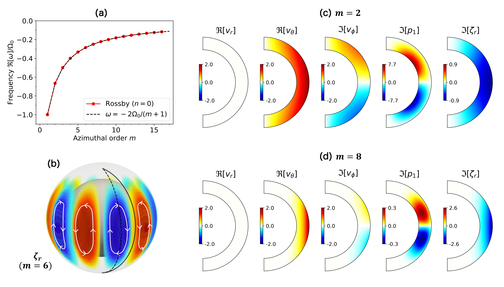
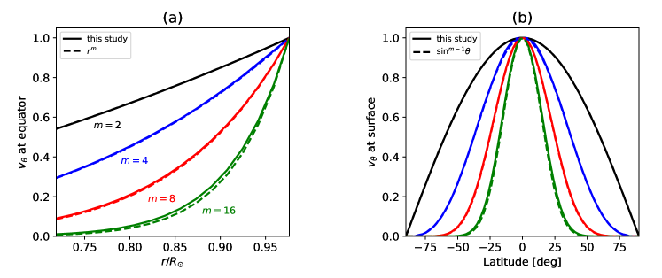
2.5 مثال لطيف في حالة الدوران المنتظم
لكل ، توجد حلول ذاتية ذات ترددات ودوال ذاتية . مثالا على ذلك، نعرض التوزيع النموذجي للترددات الذاتية الناتجة في مستوى مركب للحالة ذات و (فوق أديباتية ضعيفة) و cm2 s-1 في الشكل 2. لاحظ أن الدوران التفاضلي غير مدرج هنا طلبا للبساطة؛ إذ يساوي معدل الدوران المنتظم معدل دوران كارينغتون .
تنتمي الأنماط إلى إحدى عدة مناطق في طيف الترددات الذاتية المركبة. الأنماط المرئية في الشكل 2a هي أنماط صوتية (أنماط p) مخمدة قليلا بسبب الانتشار اللزج والحراري. في هذا الرسم، لا يكون أثر الدوران مرئيا للعين. في بقية هذه الورقة، نركز على الأنماط منخفضة التردد في نطاق الترددات العطالية. تنحصر التذبذبات العطالية داخل المجال (مثلا، Greenspan et al., 1968). يبين الشكل 2b طيف الأنماط العطالية في المستوى المركب. يسهل تحديد نمط روسبي القطاعي عديم العقدة الشعاعية () بالمقارنة مع التردد التحليلي . ونتيجة للخلفية ذات الفوق-أديباتية الطفيفة ()، نرى أن لبعض الأنماط ترددات تخيلية موجبة () عند ترددات منخفضة جدا، ومن ثم فهي غير مستقرة. وتُعرض هذه الأنماط الحملية في الشكل 2c.
عندما تكون الخلفية تحت أديباتية ضعيفة (مثلا )، تصبح جميع الأنماط مستقرة ()، وتختلط بعض الأنماط العطالية جزئيا مع أنماط الجاذبية (أنماط g). وعندما ، تكون الأنماط إما أنماطا حملية صرفة أو أنماط g صرفة تبعا لإشارة كما هو مبين في الشكل 3. يعتمد تردد أنماط g على ، وقد يقع في النطاق العطالي تبعا لـ .
3 حالة مرجعية: لا انتشار، تطبق أديباتي، دوران منتظم
في هذا القسم، نعرض نتائج حالة مثالية تضبط فيها الانتشاريتان الاضطرابيتان اللزجة والحرارية على الصفر ()، وتكون الخلفية حيادية حمليا ()، ولا يُدرج دوران تفاضلي ( و). نعرض علاقات التشتت والدوال الذاتية لأنواع مختلفة من أنماط الدوامية ذات المقياس العالمي التي قد تكون ذات صلة بالشمس. وسنستخدم نتائج هذا الإعداد المثالي كمراجع، وستُقارن لاحقا تأثيرات الانتشار الاضطرابي والتطبق غير الأديباتي والدوران التفاضلي بهذه النتائج المرجعية.
في الحالة عديمة اللزوجة مع دوران منتظم، يكون ذاتي المرافق، ومن ثم يجب أن تكون للحلول ذات المعنى الفيزيائي ترددات ذاتية حقيقية. نجد أن نحو 10% من الترددات الذاتية لها جزء تخيلي غير صفري؛ وهذه تقابل آثارات عددية ناتجة عن أخطاء القطع، وتمتلك الدوال الذاتية المقابلة معظم قدرتها عند ترددات مكانية عالية. بالنسبة إلى الحلول ذات الترددات الذاتية الحقيقية الصرفة، يكون للدوال الذاتية لـ و الطور المركب نفسه على كل مستوى زوالي، وتكون دوال و خارج الطور بمقدار بالنسبة إلى و. وعند عرض النتائج في هذا القسم، نختار مستوى زواليا تكون فيه و حقيقيتين.
في الأقسام التالية، نجري تحليلا نمطا بنمط لأنماط روسبي الاستوائية عديمة العقد الشعاعية () وذات العقدة الشعاعية الواحدة ()، والأنماط الحملية العمودية (موجات روسبي الحرارية) بكلا تناظري الشمال-الجنوب، وأنماط خطوط العرض العالية بكلا تناظري الشمال-الجنوب. تُلخص الخصائص الأساسية لهذه الأنماط في الجدول 1. وتعرض علاقات تشتتها في الجدول 2.
3.1 أنماط روسبي الاستوائية
في هذا القسم، نناقش أنماط روسبي الاستوائية (أنماط r). وتُعرض الأنماط عديمة العقد الشعاعية () وذات عقدة شعاعية واحدة .
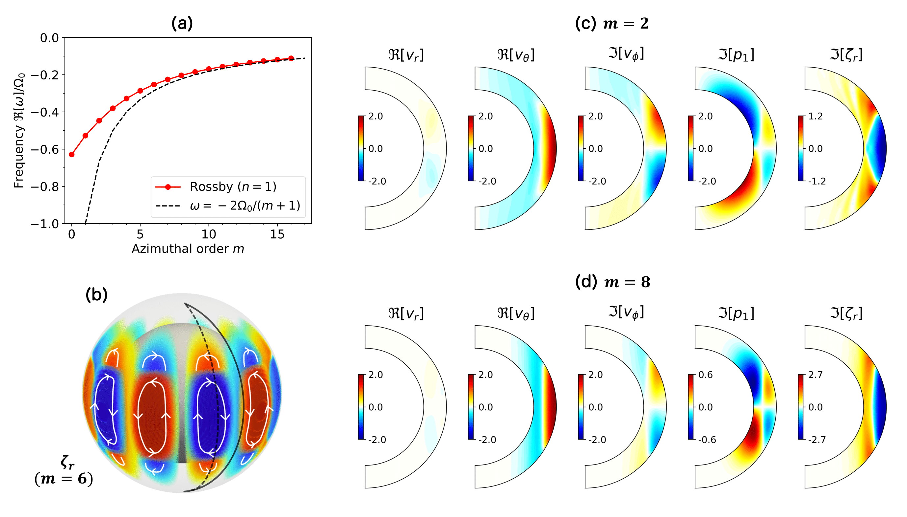
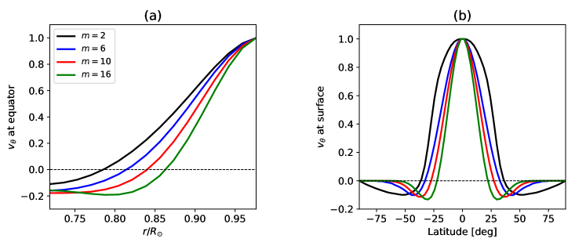
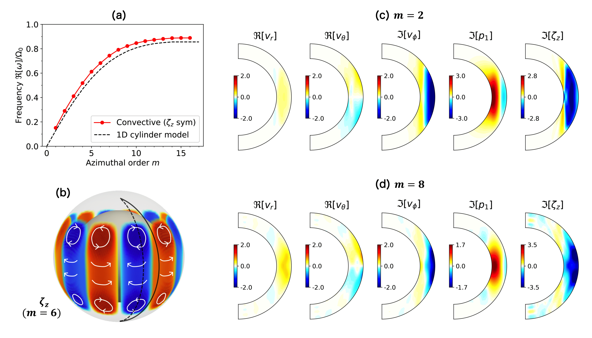
3.1.1 أنماط
لاستخراج نمط روسبي الاستوائي عند كل ، نطبق الإجراء الآتي على الدوال الذاتية المحسوبة . تُسقط السرعتان العرضية والطولية عند السطح على أساس من كثيرات حدود Legendre المصاحبة:
| (21) | |||
| (22) |
حيث . نحسب أيضا عدد العقد الشعاعية، ، لـ عند خط الاستواء. نختار الأنماط التي تحقق المعايير الثلاثة الآتية كلها:
-
تكون مركبة لـ مهيمنة ( لكل )،
-
تكون مركبة لـ مهيمنة ( لكل )،
-
وعدد العقد الشعاعية لـ يساوي صفرا عند خط الاستواء، .
يبين الشكل 4a علاقة التشتت لأنماط روسبي الاستوائية المختارة لهذا الإعداد المثالي من أجل . وينبغي التنبيه إلى أن هذه الأنماط هي النوع الوحيد من الأنماط العطالية الذي يمكن إيجاد حل تحليلي بسيط له في الحد عديم اللزوجة وذي الدوران المنتظم (مثلا، Saio, 1982). لذلك نستخدم هذا الحل التحليلي للتحقق من الكود لدينا. تمثل النقاط الحمراء والخطوط السوداء المتقطعة الترددات الذاتية المحسوبة في نموذجنا وعلاقة التشتت المتوقعة نظريا، ، على الترتيب. نجد أن الفروق في الترددات المطبعة أقل من عند جميع .
توضح البنية النموذجية لجريان هذا النمط تخطيطيا في الشكل 4b، حيث يبين التصيير الحجمي للدوامية الشعاعية باللونين الأحمر والأزرق. تبين الأشكال 4c و d الدوال الذاتية الحقيقية لـ و، على الترتيب. طُبعت الدوال الذاتية بحيث يكون عظمى مساويا لـ m s-1 عند السطح. سعة السرعة الشعاعية أصغر بنحو مرة من سعات السرعات الأفقية و، مما يعني أن حركة المائع طوريدية أساسا. نجد أن استخدام دقة أعلى يؤدي إلى أصغر حتى من ذلك. اضطراب الضغط موجب (سالب) حيث تكون الدوامية الشعاعية سالبة (موجبة) في النصف الشمالي (الجنوبي)، وهو ما يتسق مع كون الأنماط في توازن جيوستروفي. مع ازدياد ، تنزاح أنماط روسبي الاستوائية نحو السطح ونحو خط الاستواء. تصبح الدالة الذاتية الأفقية لـ أكثر امتدادا في العرض، ما يعني أن تصبح أقوى بكثير من للحفاظ على حفظ الكتلة أفقيا.
يبين الشكل 5a البنية الشعاعية للدوال الذاتية لـ عند خط الاستواء لرتب سمتية مختارة . تقارن الخطوط المتصلة والمتقطعة نتائجنا بالحل التحليلي . ويتضح أن الدوال الذاتية المحسوبة تبدي الاعتماد المتفق مع الحلول التحليلية. ونؤكد أيضا الاعتماد نفسه للدوال الذاتية لـ عند خطوط العرض المتوسطة (غير معروض). أما عند الأعلى، فتظهر الدالة الذاتية الشعاعية انحرافا طفيفا (ضمن خطأ بضعة في المئة) عن الحل التحليلي. وربما يرجع ذلك إلى شرط الحد الخالي من الإجهاد، ، عند الحدين العلوي والسفلي، الذي يتعارض مع الاعتماد . يبين الشكل 5b الدوال الذاتية العرضية لـ عند السطح. ومرة أخرى، يظهر اتفاق بين نتائجنا والحلول التحليلية .
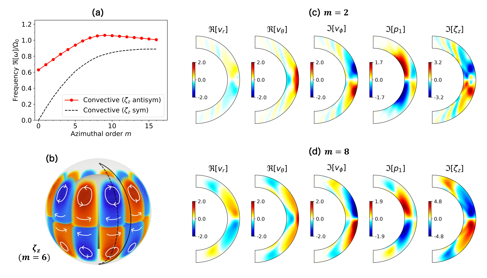
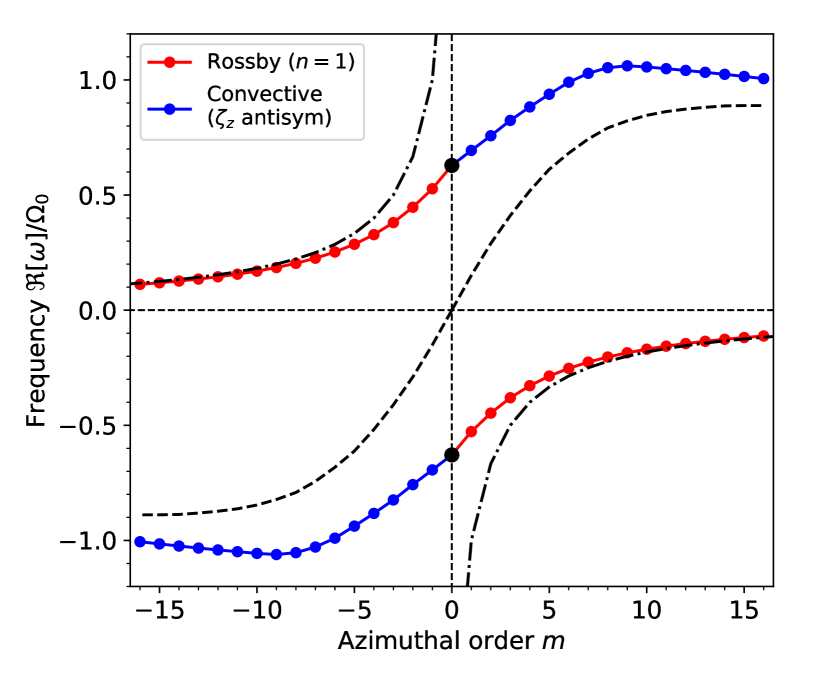
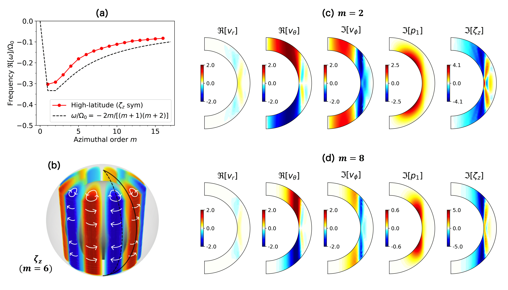
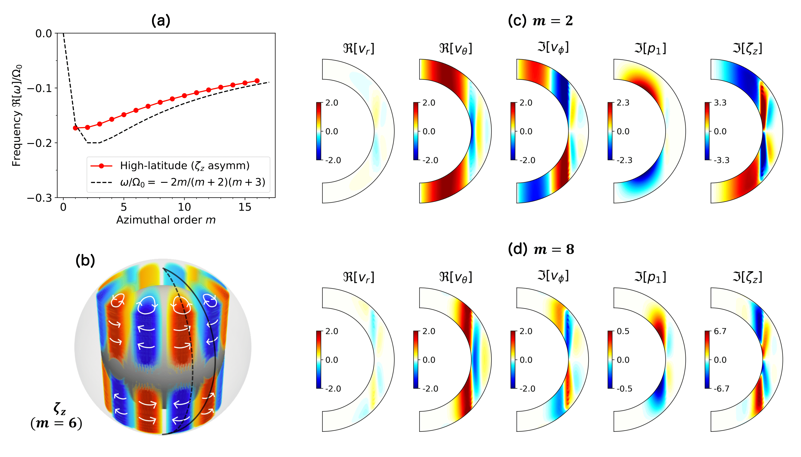
3.1.2 أنماط
يمكن اختيار أنماط روسبي الاستوائية ذات عقدة شعاعية واحدة () بتطبيق المرشحات الآتية على الدوال الذاتية للسرعتين العرضية والطولية:
-
تكون مركبة لـ مهيمنة عند السطح،
-
تكون مركبة لـ مهيمنة عند السطح،
-
وعدد العقد الشعاعية لـ يساوي واحدا عند خط الاستواء.
يبين الشكل 6a علاقة التشتت لأنماط روسبي الاستوائية المختارة من أجل . وينبغي التنبيه إلى أننا نجحنا في تحديد النمط المحوري التناظر () عند . هذا النمط هو نمط عطالي محوري التناظر محصور استوائيا. وسيبين لاحقا في §3.2.2 أن هذا النمط متصل بنمط حملي عمودي ينتشر تقدميا. تنتشر أنماط روسبي في اتجاه تراجعي بسرعة طور أبطأ من سرعة أنماط روسبي عند المنخفضة. غير أنه، من أجل ، تصبح ترددات الأنماط قريبة جدا من ترددات أنماط إلى حد يكاد يجعلها غير قابلة للتمييز.
يبين الشكل 6b رسما تخطيطيا لحركة الجريان النموذجية لنمط روسبي الاستوائي . وتعرض الأشكال 6c وd كذلك الدوال الذاتية المحصلة لأنماط روسبي الاستوائية مرسومة بالطريقة نفسها كما في الشكل 4. ويظهر بوضوح أن يمتلك مستوى عقديا في وسط منطقة الحمل عند خط الاستواء يمتد في اتجاه محور الدوران. ومن أبرز نتائج وجود العقدة الشعاعية أن جوهرية تدخل في الحركة بسبب القص الشعاعي لـ . لذلك، وعلى خلاف أنماط ، لا تبقى حركات المائع المصاحبة طوريدية صرفة، بل تصبح ثلاثية الأبعاد أساسا.
يبين الشكل 7a البنية الشعاعية للدوال الذاتية لـ عند خط الاستواء من أجل مختارة. ويُرى بوضوح أن موضع العقدة الشعاعية ينزاح نحو السطح مع ازدياد . يبين الشكل 7b البنية العرضية للدوال الذاتية لـ عند السطح. تبلغ الدوال الذاتية ذروتها عند خط الاستواء وتغير إشارتها عند خطوط العرض المتوسطة () ثم تضمحل عند خطوط العرض الأعلى.
3.2 الأنماط الحملية العمودية
في هذا القسم، نجري تحليلا مماثلا نمطا بنمط للأنماط الحملية العمودية (موجات روسبي الحرارية) بكلا تناظري نصفي الكرة. هنا نعرف تناظر الشمال-الجنوب اعتمادا على الدالة الذاتية لدوامية . يمكن في الجوهر عد نمط حمل «خلايا الموز» الجزء المتناظر شمالا-جنوبا من هذه الأنماط الحملية. وسنبين أيضا أن الأنماط المضادة للتناظر شمالا-جنوبا في مختلطة أساسا مع الأنماط الاستوائية .
3.2.1 أنماط متناظرة شمالا-جنوبا في
يمكن اختيار الأنماط الحملية العمودية المتناظرة شمالا-جنوبا في بتطبيق المرشحات الآتية على الدوال الذاتية للسرعة:
-
تكون مركبة لـ مهيمنة عند السطح،
-
تكون مركبة لـ مهيمنة عند السطح.
-
عدد العقد الشعاعية لـ يساوي صفرا عند خط الاستواء،
-
وعدد العقد الشعاعية لـ يساوي واحدا عند خط الاستواء.
يبين الشكل 8a علاقة التشتت للأنماط الحملية العمودية المختارة المتناظرة شمالا-جنوبا في . وللمقارنة، نرسم بخط أسود متقطع علاقة التشتت المستمدة من نموذج الأسطوانة أحادي البعد لـ Glatzmaier and Gilman (1981) (شكلهم 2). نوعيا، يظهر كلاهما سمات متشابهة: تنتشر الأنماط الحملية العمودية في اتجاه تقدمي عند جميع . تكاد الأنماط تكون غير مشتتة عند المنخفضة ()، أما عند الأعلى فتصبح ترددات الأنماط شبه ثابتة عند . كميا، ينتج نموذجنا ترددات أنماط أعلى قليلا (أقل من ) من تلك الناتجة عن نموذج الأسطوانة أحادي البعد. يرجح أن يأتي هذا الفرق من الهندسة الكروية لنموذجنا: إذ يأخذ نموذجنا في الحسبان تأثيري الانضغاطي والطبوغرافي، اللذين يؤدي كلاهما إلى انتشار طور تقدمي، في حين لا يتضمن إلا تأثير الانضغاطي في نموذج الأسطوانة لـ Glatzmaier and Gilman (1981).
تعرض الأشكال 8c وd أمثلة على الدوال الذاتية للأنماط الحملية العمودية المتناظرة شمالا-جنوبا في . تتميز بنية الجريان أساسا بقص السرعة الطولية خارج الأسطوانة المماسة، مما يؤدي إلى دوامية قوية في (حيث إن إحداثي في اتجاه محور الدوران). وتدخل حركات شعاعية جوهرية حيث يتقارب أو يتباعد طوليا، كما يوضح الشكل 8b تخطيطيا. وبفعل الانحناء الكروي للحد العلوي، تنشأ جريانات عرضية نحو خط الاستواء (نحو القطب) حيث تكون الجريانات الشعاعية إلى الخارج (إلى الداخل). غالبا ما تسمى أنابيب الدوامية خارج الأسطوانة المماسة أعمدة Taylor أو أعمدة Busse في السياق الجيوفيزيائي (Busse, 1970, 2002) أو خلايا الموز في السياق الشمسي (Miesch et al., 2000). اضطراب الضغط موجب (سالب) عموما حيث تكون دوامية سالبة (موجبة)، لأن الأنماط في توازن جيوستروفي. ومع ازدياد ، تصبح الأنماط أكثر تركزا نحو السطح ونحو خط الاستواء.
3.2.2 أنماط مضادة للتناظر شمالا-جنوبا في
يمكن اختيار الأنماط الحملية العمودية المضادة للتناظر شمالا-جنوبا في بترشيح الدوال الذاتية التي تحقق ما يلي:
-
تكون مركبة لـ مهيمنة عند السطح،
-
تكون مركبة لـ مهيمنة عند السطح،
-
وعدد العقد الشعاعية لـ يساوي واحدا عند خط الاستواء.
تُعرض علاقة التشتت للأنماط الحملية العمودية المضادة للتناظر في في الشكل 9a. وللمقارنة، نعرض أيضا علاقة التشتت للأنماط المتناظرة في بخط أسود متقطع. تنتشر الأنماط في اتجاه تقدمي بسرعة طور أكبر من سرعة الأنماط المتناظرة في . وعند العالية، تقترب علاقة التشتت تقاربيا من علاقة الأنماط المتناظرة في .
تعرض الأشكال 9c وd أمثلة على الدوال الذاتية للأنماط الحملية العمودية المضادة للتناظر شمالا-جنوبا في . تتميز بنية الجريان أساسا بأنابيب دوامية مضادة التناظر عبر خط الاستواء. وينبغي التنبيه إلى وجود حركات عرضية قوية عند خط الاستواء على السطح.
نجد أن الدوال الذاتية للنمط هي المرافق المركب لنمط روسبي الاستوائي ، مما يعني أن هذين النمطين متماثلان عند (لاحظ أن سرعة الطور لم تعد مهمة للنمط المحوري التناظر غير المنتشر). ولتوضيح هذه النقطة على نحو أفضل، نعرض في الشكل 10 علاقات التشتت لهذين النمطين في المجال الكامل () الممتد إلى الرتب السمتية السالبة. ويتبين أن علاقات التشتت لهذين النمطين تتصل عبر وتشكل منحنى واحدا مستمرا. ويعني ذلك أن هذين النمطين مختلطان في الجوهر أحدهما مع الآخر: ينبغي عد أنماط روسبي الاستوائية والأنماط الحملية العمودية المضادة للتناظر شمالا-جنوبا في فرعين تراجعيا وتقدميا من أنماط (روسبي) «المختلطة». ومن المفيد ملاحظة أن هذا الاختلاط النمطي يمكن فهمه قياسا على ما يسمى موجات Yanai، وهي أنماط مختلطة بين أنماط روسبي المنتشرة تراجعيا وأنماط الجاذبية العطالية المنتشرة تقدميا (Matsuno, 1966; Vallis, 2006).
وقد عُرفت بنية الجريان ذاتها للنمط الحملي العمودي المضاد للتناظر في بأنها غير مستقرة حمليا في الأدبيات السابقة (Lorenzani and Tilgner, 2001; Tilgner, 2007). غير أن علاقتها بأنماط روسبي الاستوائية لم تُذكر من قبل.
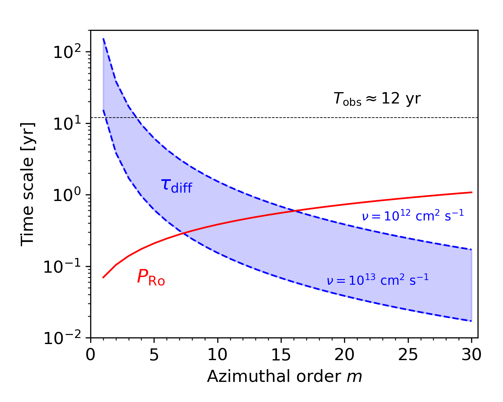
3.3 أنماط خطوط العرض العالية
في هذا القسم الفرعي، نعرض الأنماط الذاتية للأنماط العطالية عند خطوط العرض العالية بكلا تناظري نصفي الكرة.
3.3.1 أنماط متناظرة شمالا-جنوبا في
لمناقشة هذه الأنماط، من المفيد إدخال نظام إحداثيات أسطواني . في هذا النظام الإحداثي، تقع الأسطوانة المماسة عند ، أي إنها الأسطوانة المصطفة مع محور الدوران التي تلامس الباطن الإشعاعي عند خط الاستواء. يمكن اختيار أنماط خطوط العرض العالية المتناظرة شمالا-جنوبا في بتطبيق المعايير الآتية:
-
تتركز الطاقة الحركية غالبا داخل الأسطوانة المماسة، أي حيث إن و هما الطاقتان الحركيتان المكاملتان حجما داخل الأسطوانة المماسة وفي منطقة الحمل بأكملها، على الترتيب.
-
تكون مركبة لـ مهيمنة عند قاع منطقة الحمل.
-
عدد عقد لـ يساوي صفرا عند .
يبين الشكل 11a علاقة التشتت لأنماط خطوط العرض العالية المتناظرة شمالا-جنوبا في . نجد أن أنماط خطوط العرض العالية أكثر تشتتا بكثير من الأنماط الحملية العمودية عند المنخفضة. وتبين أن علاقة التشتت تقارب على نحو خشن علاقة تشتت أنماط روسبي غير القطاعية ذات عقدة عرضية واحدة ()، كما يبين الخط الأسود المتقطع في الشكل 11a. ويرجع ذلك إلى أن الجريانات الأفقية عند الحد السفلي تتصرف كأنماط روسبي (الكلاسيكية). ومع ذلك، لاحظ أن هذا لا يُعد اختلاطا نمطيا كما نوقش في §3.2.2.
تعرض الأشكال 11c وd أمثلة على الدوال الذاتية للأنماط المتناظرة في عند خطوط العرض العالية. تتميز حركة المائع غالبا بدوامات داخل الأسطوانة المماسة في نصفي الكرة كليهما، كما يوضح الشكل 11b تخطيطيا. تبلغ قدرة ذروتها عند الأسطوانة المماسة . لاحظ أن السرعة الطولية تمتد قليلا إلى خارج الأسطوانة. ومرة أخرى، يتبع من كون النمط في توازن جيوستروفي.
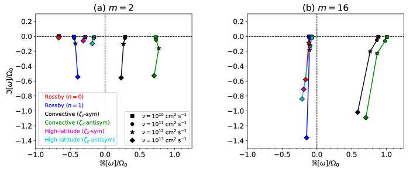
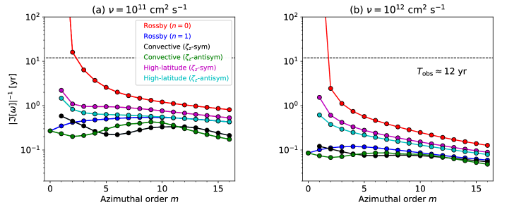
3.3.2 أنماط مضادة للتناظر شمالا-جنوبا في
تُختار أنماط خطوط العرض العالية المضادة للتناظر شمالا-جنوبا في باستخدام المرشحات الآتية:
-
تتركز الطاقة الحركية غالبا داخل الأسطوانة المماسة.
-
تكون مركبة (أو ) لـ مهيمنة عند قاع منطقة الحمل،
-
وعدد عقد يساوي صفرا لـ عند .
تُعرض الأنماط المثال في الشكل 12. وتبدي الدوال الذاتية خصائص شبيهة جدا بخصائص أنماط خطوط العرض العالية المناقشة في الشكل 11، باستثناء تناظر الشمال-الجنوب. وينبغي الإشارة إلى وجود جريان عرضي على امتداد الأسطوانة المماسة وعبر خط الاستواء. وتبين أن علاقة تشتت أنماط خطوط العرض العالية المضادة للتناظر في تشبه علاقة أنماط روسبي ، كما هو مبين في الشكل 12a.
4 تأثير الانتشار الاضطرابي
حتى الآن، ناقشنا نتائج الحالة عديمة اللزوجة. في هذا القسم، نفحص تأثيرات الانتشار اللزج والحراري الناشئة عن المزج الاضطرابي للزخم والإنتروبيا في الشمس (مثلا، Rüdiger, 1989). لنبدأ مناقشتنا بتقدير أثر الانتشار الاضطرابي في أنماط روسبي (الكلاسيكية). تعطى فترة تذبذب نمط روسبي الاستوائي عند الرتبة السمتية بـ
| (23) |
ومن جهة أخرى، يمكن تقدير المقياس الزمني الانتشاري النموذجي كما يلي
| (24) |
حيث يدل على مقياس الطول النموذجي لنمط روسبي. يقارن الشكل 13 بين و بوصفهما دالتين في . وتُعرض قيمتان تمثيليتان للانتشاريات الاضطرابية في منطقة الحمل الشمسي و cm2 s-1 (مثلا، Ossendrijver, 2003). عندما ، يكون الانتشار اللزج مهملا تقريبا. لكن إذا كان ، فقد يكون للانتشار أثر مهيمن في أنماط روسبي. ومن أجل انتشارية اضطرابية معطاة ، يمكن تعريف الرتبة السمتية الحرجة على أنها
| (25) |
تهيمن تأثيرات الانتشار على أنماط روسبي عندما . ويوحي الشكل 13 بأن أنماط روسبي في الشمس تتأثر تأثيرا جوهريا بالانتشار الاضطرابي، ولا سيما من أجل .
في هذه الورقة، نجري مجموعة من الحسابات لمائع أديباتي ذي دوران منتظم مع انتشاريات متغيرة؛ ، و cm2 s-1. وللبساطة، نثبت عدد Prandtl عند الوحدة بحيث . والآن تصبح كل من الترددات الذاتية والدوال الذاتية مركبة. يبين الشكل 14 الترددات الذاتية للأنواع الستة من أنماط روسبي المناقشة في § 3 من أجل انتشاريات لزجة مختلفة في مستوى مركب. وتبين الأشكال 14a وb الحالتين من أجل و، على الترتيب. عموما، تُخمد الأنماط بالانتشار بحيث تُزاح الترددات التخيلية نحو قيم أكثر سلبية. عند الصغيرة (مثلا )، يميل الانتشار إلى التأثير أساسا في الأنماط الحملية العمودية بكلا التناظرين وأنماط روسبي الاستوائية ، في حين تبقى أنماط روسبي وأنماط خطوط العرض العالية شبه غير متأثرة. أما عند الكبيرة (مثلا )، فتُخمد جميع الأنماط بدرجة متشابهة. لاحظ أن الانتشار القوي لا يغير الجزء التخيلي فحسب، بل يغير أيضا الجزء الحقيقي من ترددات الأنماط. تعرض أزمنة الطي المحسوبة لهذه الأنماط في الشكل 15 لقيمتين تمثيليتين من اللزوجة الاضطرابية و cm2 s-1.
والآن، لنركز على أنماط روسبي الاستوائية لنرى كيف تتأثر الدوال الذاتية بالانتشار اللزج. يبين الشكل 16a الدوال الذاتية الحقيقية (الصف العلوي) والتخيلية (الصف السفلي) للدوامية الشعاعية عند لقيم مختلفة من الانتشاريات اللزجة . ومع ازدياد ، تنزاح أنماط روسبي الاستوائية نحو قاعدة منطقة الحمل. ويتضح ذلك في الشكل 16b حيث تعرض السعات المطلقة للدوامية الشعاعية عند خط الاستواء بوصفها دوال في نصف القطر. عندما تصبح كبيرة بما يكفي، تنحرف الدالة الذاتية الشعاعية جوهريا عن الاعتماد المعروف . يمكن تفسير ذلك كما يلي: مع إدراج انتشار معتدل، لا يعود توازن القوة الشعاعية بين قوة كوريوليس وقوة تدرج الضغط محفوظا. وبالتالي تُقاد جريانات شعاعية ويصبح فيض الزخم الانتشاري متجها شعاعيا إلى الداخل. وفي الواقع، يظهر أيضا حصر أنماط روسبي الاستوائية قرب القاعدة في محاكاة الحمل الدوار حيث يمكن أن يتعزز الانتشار كثيرا بفعل الحمل الاضطرابي (Bekki et al., in prep.).
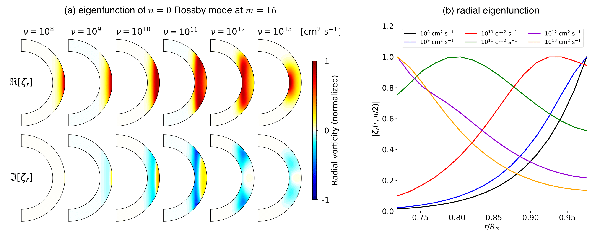
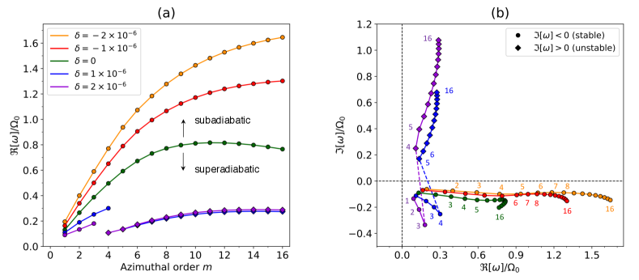
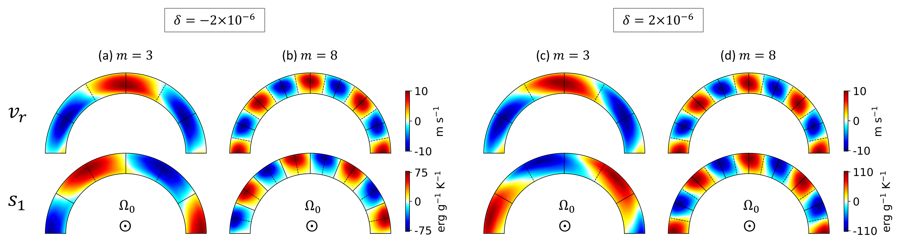
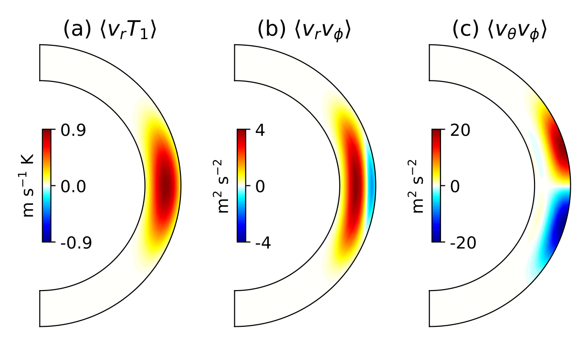
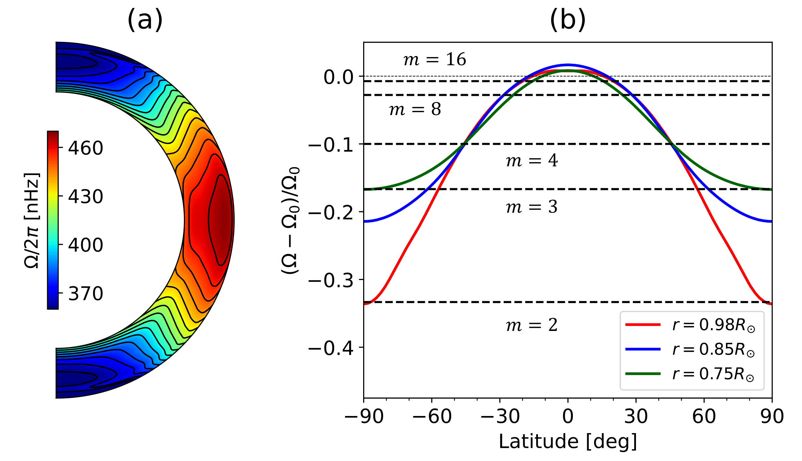
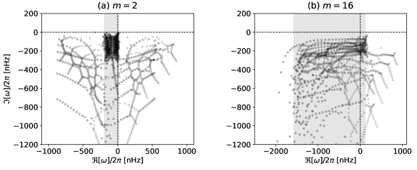
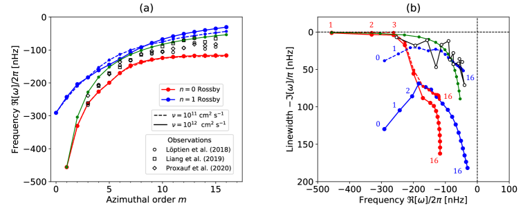
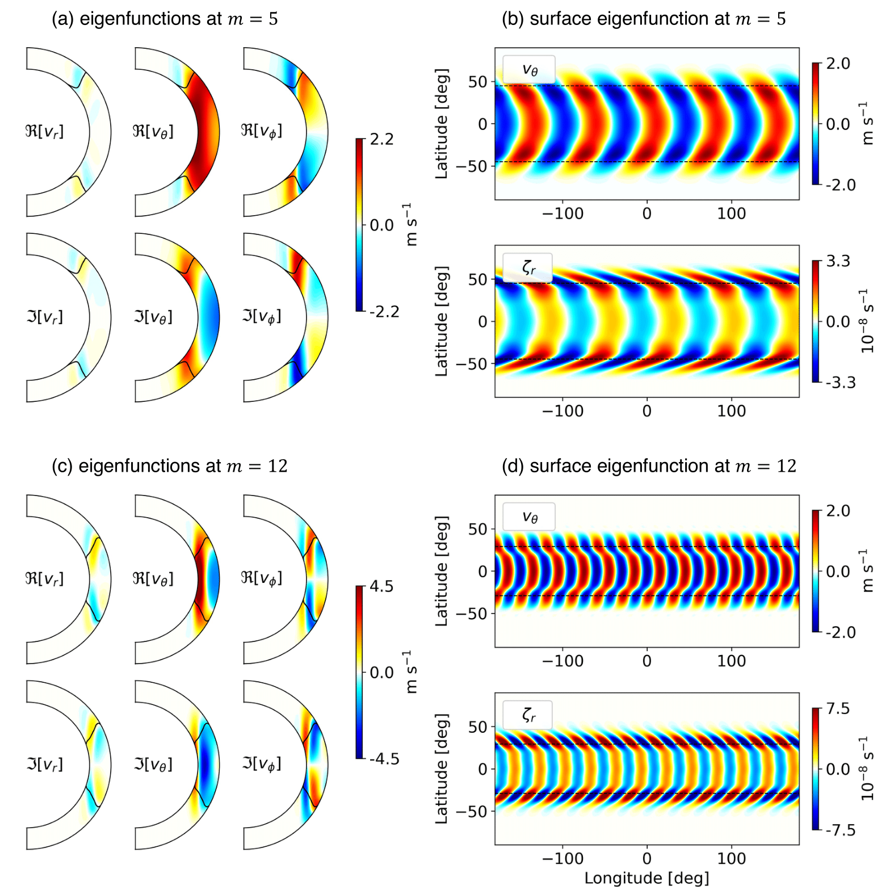
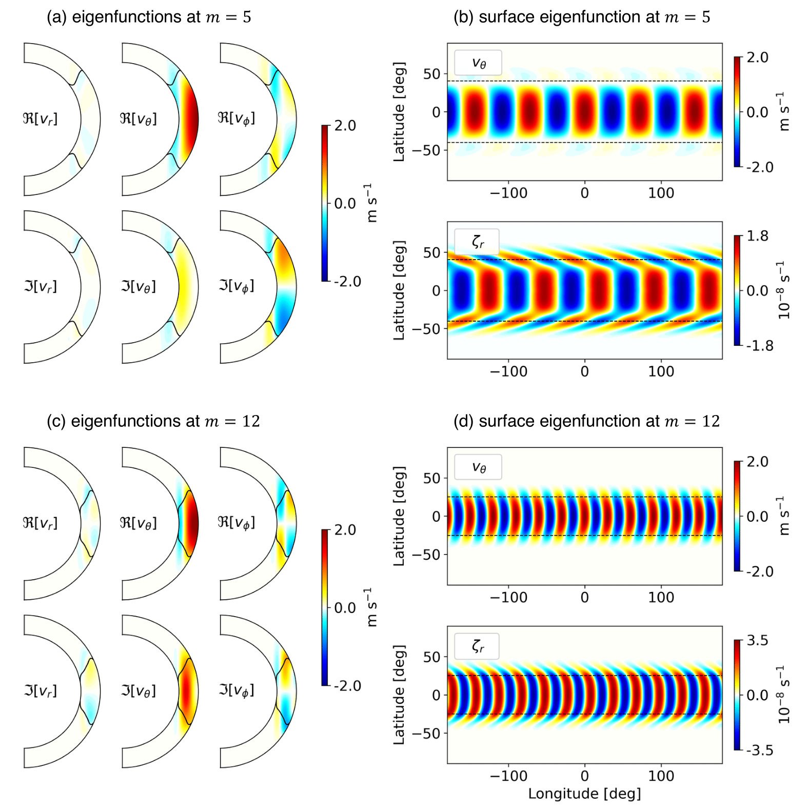
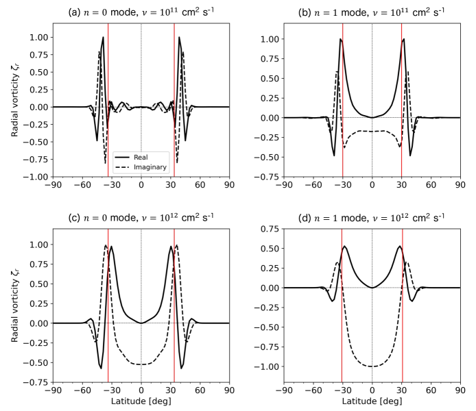
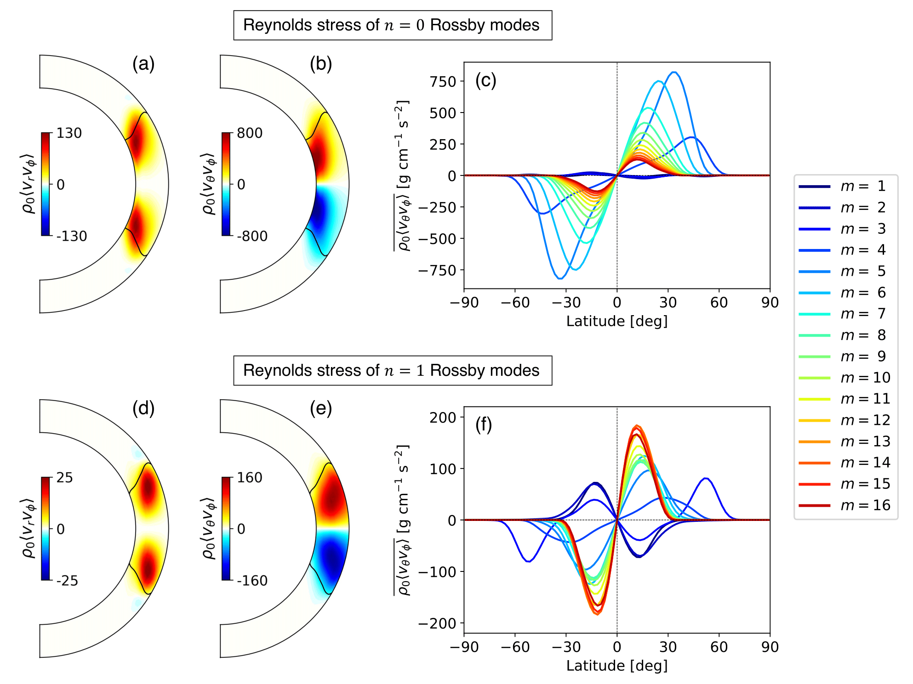
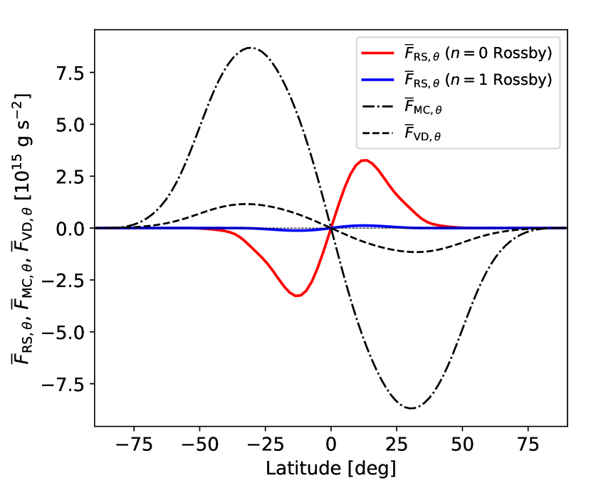
5 تأثير التطبق غير الأديباتي
في هذا القسم، تُدرس تأثيرات التطبق غير الأديباتي. وبينما تفترض النماذج النظرية للشمس عادة قيمة موجبة صغيرة لفوق-الأديباتية (مثلا، Ossendrijver, 2003)، تشير المحاكاة العددية الحديثة للحمل الشمسي إلى أن النصف السفلي من منطقة الحمل قد يكون تحت أديباتي قليلا (Hotta, 2017; Käpylä et al., 2017; Bekki et al., 2017; Karak et al., 2018; Käpylä et al., 2019). ولهذه الغاية، نغير فوق-الأديباتية من تحت أديباتية ضعيفة إلى فوق أديباتية ضعيفة، ، مع إبقاء الانتشاريات ثابتة ( cm2 s-1). ولا يُدرج الدوران التفاضلي الشمسي ولا تدرج الإنتروبيا العرضي. وبما أن اضطراب الإنتروبيا يتولد عن الجريان الشعاعي، فإننا نركز في هذا القسم على الأنماط الحملية العمودية (المتناظرة شمالا-جنوبا في ) حيث تدخل حركات شعاعية قوية.
يبين الشكل 17a علاقات تشتت الأنماط الحملية العمودية المتناظرة في لقيم مختلفة من . ومع ازدياد الخلفية في كونها تحت أديباتية (فوق أديباتية)، تصبح ترددات الأنماط أعلى (أدنى)، أي إن الأنماط تنتشر في اتجاه تقدمي بسرعة طور أكبر (أصغر). عندما يكون كبيرا بما يكفي، تصبح الترددات التخيلية للأنماط موجبة، أي تصبح الأنماط غير مستقرة حمليا. ويتجلى ذلك بوضوح في الشكل 17b حيث ترسم ترددات الأنماط في مستوى مركب. كل نقطة تدل على نمط مع الرتبة السمتية المصاحبة موسومة بقربها. تميَّز الأنماط المستقرة وغير المستقرة بالدوائر والمعينات، على الترتيب. بالنسبة إلى (الأزرق والأرجواني)، يحدث انتقال فجائي من الفروع المستقرة إلى غير المستقرة (عند و). وتعتمد الرتبة السمتية الحرجة لهذا الانتقال على فوق-الأديباتية عبر معيار عدد Rayleigh لعدم الاستقرار الحملي.
يمكن فهم تغيرات علاقة التشتت بالنظر فيما إذا كانت قوة الطفو تعمل قوة معيدة أم بالعكس. تعرض الأشكال 18a و b لقطات لـ و في مستوى استوائي كما يُرى من القطب الشمالي لخلفية تحت أديباتية ضعيفة () من أجل و، على الترتيب. ويُرى أن الطور ذي الموجب يتقدم دائما على الطور ذي الموجب في خط الطول، مما يؤدي إلى ارتباط سالب بين و. وهذا يعني فيزيائيا أن قوة الطفو تعمل في هذه الحالة قوة معيدة إضافية للأنماط الحملية العمودية المنتشرة تقدميا. بعبارة أخرى، تشترك هذه الأنماط في خاصية أنماط g المنتشرة تقدميا. وبناء على ذلك، تصبح ترددات الأنماط أعلى من أجل . وتحدث الحالة المعاكسة من أجل . تعرض الأشكال 18c و d المقاطع الاستوائية نفسها لـ و لخلفية فوق أديباتية ضعيفة. عندما لا يكون كبيرا بما يكفي لحدوث عدم الاستقرار الحملي، يُرى أن الطور ذي الموجب يتأخر عن الطور ذي الموجب في خط الطول، مما يؤدي إلى ارتباط موجب بين و. لذلك تعمل قوة الطفو ضد القوة المعيدة الأصلية لتأثير الانضغاطي، مما يضعف الانتشار التقدمي للأنماط الحملية العمودية. ونتيجة لذلك، تصبح ترددات الأنماط أدنى من أجل . دُرس هذا التأثير أول مرة في Gilman (1987) باستخدام نموذج أسطواني مبسط. يبين الشكل 18d الحالة التي يكون فيها كبيرا بما يكفي ويصبح النمط غير مستقر حمليا. ويتضح بجلاء أن طوري و يتطابقان الآن، وأن لهما الإشارة نفسها في كل طور، مما يؤدي إلى .
يبين الشكل 19 كذلك خصائص نقل الطاقة الحرارية والزخم الزاوي بواسطة الأنماط الحملية العمودية غير المستقرة حمليا. المعروض هو الحالة ذات ومن أجل . وتدل إيجابية في الشكل 19a على أن فيض الإنثالبي يُنقل إلى الأعلى. تمثل مركبتا إجهاد Reynolds و فيضي الزخم الزاوي الشعاعي والعرضي، على الترتيب. ويظهر أن الأنماط الحملية العمودية تستطيع نقل الزخم الزاوي شعاعيا إلى الأعلى في معظم منطقة الحمل ونحو خط الاستواء قرب السطح. ويتفق ذلك مع النتائج الموجودة في محاكاة الحمل الدوار (Bekki et al., in prep.).
6 تأثير الدوران التفاضلي الشمسي
أخيرا، في هذا القسم، نأخذ في الحسبان تأثيرات الدوران التفاضلي الشمسي. لتعيين ، نستخدم البيانات المستخلصة من انقلابات علم الاهتزازات الشمسية العالمي من MDI وHMI (Larson and Schou, 2018) كما هو مبين في الشكل 20a. لاحظ أن البيانات الرصدية مقطوعة عند و، ولذلك لا تُدرج تأثيرات طبقات القص الشعاعي القوية مثل التاكوكلين وطبقة القص القريبة من سطح الشمس. يُختار إطار الرصد ليكون إطار كارينغتون بمعدل الدوران nHz. يبين الشكل 20b الملفات العرضية للدوران التفاضلي عند أعماق مختلفة. وتشير الخطوط الأفقية المتقطعة إلى سرعة الطور المقدرة لأنماط روسبي الاستوائية ، ، لقيم مختارة. ومن أجل ، تظهر خطوط عرض حرجة حيث تتطابق سرعة طور نمط روسبي مع سرعة الدوران التفاضلي. وكما ناقش Gizon et al. (2020a) وFournier et al. (2022)، يلزم الانتشار اللزج الاضطرابي لإزالة التفردات عند خطوط العرض الحرجة، مما يؤدي إلى تكون طبقات حرجة لزجة ذات امتداد عرضي نموذجي يعطى بـ
| (26) |
يبين الشكل 21 توزيع الترددات الذاتية للأنماط العطالية ذات المقياس العالمي في مستوى مركب من أجل و. وتمثل المنطقة المظللة مجال ترددات الأنماط حيث يمكن أن يكون للدوران التفاضلي أثر قوي بإنتاج الطبقات الحرجة. ومع ازدياد ، يزداد عدد الأنماط الذاتية المتأثرة بالدوران التفاضلي: في الواقع، تتأثر معظم الأنماط العطالية المنتشرة تراجعيا بخطوط العرض الحرجة عند الأعلى (انظر الشكل 21b).
6.1 أنماط روسبي ذات طبقات حرجة لزجة
في هذا القسم، نجري مجموعة من الحسابات من أجل و cm2 s-1 مع إدراج الدوران التفاضلي لدراسة كيفية تأثر أنماط روسبي الاستوائية بالطبقات الحرجة اللزجة. وللبساطة، نضبط الخلفية لتكون أديباتية تماما ونوقف تغير الإنتروبيا العرضي .
يبين الشكل 22a علاقة التشتت لأنماط روسبي الاستوائية ذات (أحمر) و (أزرق) للانتشار اللزج الضعيف (متقطع) والقوي (متصل)، على الترتيب. وتعرض بالدوائر والمربعات والمعينات البيضاء ترددات أنماط روسبي المرصودة على الشمس (Löptien et al., 2018; Liang et al., 2019; Proxauf et al., 2020). وتبين أن لقيمة الانتشارية اللزجة أثرا صغيرا نسبيا في الجزء الحقيقي من تردداتها الذاتية. عند ، يتفق التردد المرصود اتفاقا شبه تام مع تردد نمط روسبي الاستوائي . لكن من أجل ، تقع الترددات المرصودة بين ترددي النمطين و. يبين الشكل 22b الترددات الذاتية المحسوبة في مستوى مركب. وعلى خلاف أنماط ، تُخمد أنماط بدرجة كبيرة فقط من أجل ، ويرجح أن ذلك ناتج عن ظهور خطوط العرض الحرجة التي تعدل دوال أنماط الذاتية تعديلا كبيرا. عروض خطوط أنماط روسبي الاستوائية في نموذجنا من رتبة مقدار الرصود نفسها كما يبين الشكل 22b.
يبين الشكل 23 الدوال الذاتية للسرعة في أنماط للحالة ذات cm2 s-1. وتبين الأشكال 23a وc مقاطع زوالية عبر الدوال الذاتية من أجل و، على الترتيب. كما نوقش من قبل في § 4، تنحصر السرعة العرضية قرب قاعدة منطقة الحمل. ومع إدراج الدوران التفاضلي، تُحبس هذه الأنماط أكثر في المنطقة الاستوائية المحدودة بالطبقات الحرجة اللزجة. وعلى خلاف حالة الدوران المنتظم، تُقاد جريانات شعاعية وطولية قوية حول خطوط العرض الحرجة، مما يؤدي إلى تركزات قوية لدوامية هناك. وتبين الأشكال 23b و d السرعة العرضية (الصفوف العليا) والدوامية الشعاعية (الصفوف السفلى) عند أعلى المجال. ولكلتيهما ميل شبيه بشكل الشارة نحو خط الاستواء. غير أن لـ قمما بارزة في القدرة حول الطبقات الحرجة.
الشكل 24 هو الشكل نفسه مثل الشكل 23 ولكن لأنماط روسبي الاستوائية . وعلى خلاف أنماط ، تبلغ الدوال الذاتية لـ (و) ذروتها عند السطح وعند خط الاستواء. وعلى الرغم من وجود الطبقات الحرجة على نحو مشابه لأنماط ، نجد أن تأثيرها في أنماط روسبي محدود نسبيا.
لرؤية اعتماد الانتشارية، نعرض عند السطح للانتشاريات اللزجة الضعيفة (الصفوف العليا) والقوية (الصفوف السفلى) في الشكل 25. اللوحتان اليسرى واليمنى هما لأنماط روسبي الاستوائية و، على الترتيب. وتدل الخطوط المتصلة والمتقطعة على الجزأين الحقيقي والتخيلي، ويشير الخط الأحمر العمودي إلى موقع خطوط العرض الحرجة. يُعرَّف الطور بحيث يكون عند خط الاستواء، وتُطبع السعات العظمى إلى الوحدة. تُلاحظ بنية جوهرية مرتبطة بالطبقات الحرجة اللزجة. وعموما، تصبح هذه البنية أعرض وأضعف مع زيادة اللزوجة . ويُرى أيضا أن سعات الأجزاء التخيلية للدوال الذاتية أكبر لأنماط منها لأنماط .
بعد ذلك، لنفحص أثر النقل الصافي للزخم الزاوي بواسطة أنماط روسبي الاستوائية تحت تأثير الدوران التفاضلي الشمسي. تبين الأشكال 26a و b مركبتي إجهاد Reynolds و لأنماط عند . تصبح إجهادات Reynolds غير صفرية بدرجة جوهرية قرب الطبقات الحرجة اللزجة. ومن اللافت أن حتى النمط ، الذي يكون في حالة الدوران المنتظم طوريديا وغير حملي، يستطيع نقل الزخم الزاوي شعاعيا إلى الأعلى حول الطبقات الحرجة اللزجة. أما عرضيا، فيُنقل الزخم الزاوي نحو خط الاستواء في نصفي الكرة كليهما. يبين الشكل 26c الكمية عند السطح لجميع . ويُرى أن الارتباطات تصغر مع ازدياد لأن أنماط تصبح محصورة أكثر فأكثر قرب قاعدة منطقة الحمل. وتعرض النظائر الخاصة بأنماط في الشكل 26d–f. ومن الواضح أن أنماط تنقل أيضا الزخم الزاوي شعاعيا إلى الأعلى ونحو خط الاستواء عند الأعلى. لكن على خلاف أنماط ، يبلغ إجهاد Reynolds ذروته أسفل السطح قليلا. لذلك يصبح الارتباط عند السطح أوضح مع ازدياد ، كما هو مبين في الشكل 26f.
من المفيد فحص مدى أهمية نقل الزخم الزاوي بواسطة أنماط روسبي الاستوائية هذه في الشمس. ولهذه الغاية، ننظر في ما يسمى معادلة الضخ الجيروسكوبي (مثلا، Elliott et al., 2000; Miesch and Hindman, 2011)
| (27) |
حيث إن و و هي فيوض الزخم الزاوي المنقولة بإجهاد Reynolds والدوران الزوالي والانتشار اللزج الاضطرابي، على الترتيب. وتُعرَّف بـ
| (28) | |||
| (29) | |||
| (30) |
حيث إن هو الجريان الزوالي. يبين الشكل 27 كل حد من المركبة العرضية للمعادلة (27) بعد متوسطته على نصف القطر. تُطبع الدوال الذاتية بحيث تكون سعة السرعة الأفقية العظمى عند السطح m s-1، كما يستدل من الرصود (Löptien et al., 2018). ولتقدير (الخط الأسود المنقط-المتقطع)، نستخدم بيانات الدوران الزوالي الرصدية التي حصل عليها Gizon et al. (2020b). ومن أجل (الخط الأسود المتقطع)، نفترض لزوجة منتظمة مكانيا قدرها cm2 s-1. ويظهر أن نقل الزخم الزاوي نحو خط الاستواء بواسطة إجهاد Reynolds يتوازن مع النقل نحو القطب بواسطة الجريان الزوالي وبالانتشار الاضطرابي. وتبين أن سعة المرتبطة بأنماط تكاد تكون مهملة، في حين أن سعة أنماط جوهرية وتبلغ نحو % من المساهمتين الأخريين . ينشأ الفرق بين أنماط و من حقيقة أن الدوال الذاتية للسرعة في أنماط تبلغ ذروتها عند السطح، في حين تبلغ دوال أنماط ذروتها قرب القاعدة. لذلك، عندما تُطبع الدوال الذاتية بسرعة السطح، لا تصبح إلا أنماط مهمة لديناميكيات منطقة الحمل. وتلزم هنا بعض الحيطة، لأن الدوال الذاتية يمكن أن تكون شديدة الحساسية لمعلمات نموذجية مختلفة (مثل و)، ومن ثم قد تؤدي مجموعة مختلفة من المعلمات إلى توازن مختلف للزخم الزاوي. وعلاوة على ذلك، يفترض النموذج أن الانتشاريات منتظمة ومتساوية الخواص، مما سيؤثر أيضا في الدوال الذاتية. ومع ذلك، يُقترح أن أنماط روسبي الاستوائية قد تؤدي دورا محتملا في نقل الزخم الزاوي نحو خط الاستواء في الشمس.
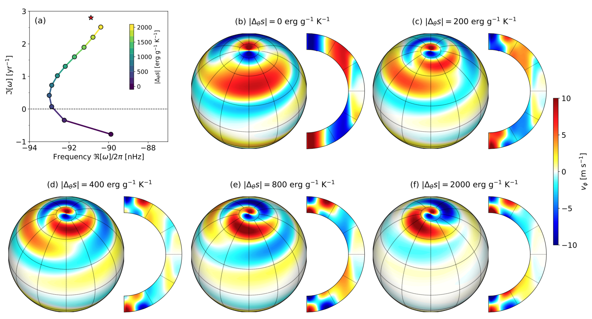
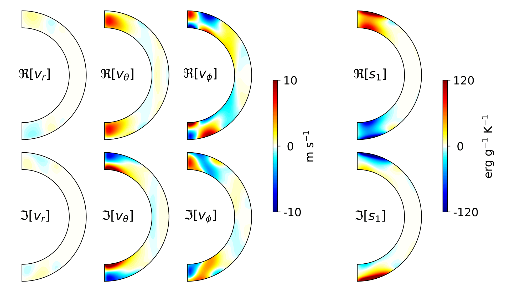
6.2 تأثير الباروكلينية في الأنماط العطالية عند خطوط العرض العالية
نفترض أن الدوران التفاضلي الشمسي في توازن رياح حرارية؛ حيث يُوازن الانحراف عن حالة Taylor-Proudman بتغير الإنتروبيا العرضي (مثلا، Rempel, 2005; Miesch et al., 2006; Brun et al., 2011). بعبارة أخرى، تكون منطقة الحمل الشمسي باروكلينية في الجوهر. وبما أن أنماط خطوط العرض العالية تقع عند خطوط عرض عالية، فإنها تخضع للباروكلينية المفروضة في منطقة الحمل وربما تصبح غير مستقرة (Knobloch and Spruit, 1982; Spruit and Knobloch, 1984; Kitchatinov, 2013; Gilman and Dikpati, 2014).
في هذا القسم، ندرس تأثير الباروكلينية في منطقة الحمل على الأنماط العطالية عند خطوط العرض العالية بتغيير سعة تدرج الإنتروبيا العرضي المفروض. ويحظى هذا التأثير على النمط ذي المضاد للتناظر شمالا-جنوبا باهتمام خاص. هنا نفترض أن الاعتماد العرضي لملف إنتروبيا الخلفية هو
| (31) |
حيث يمثل فرق الإنتروبيا بين خط الاستواء الأبرد والقطبين الأسخن. وللبساطة، يُهمل الاعتماد الشعاعي ( منتظم في نصف القطر، ومن ثم حيادي حمليا). نستخدم انتشاريات لزجة وحرارية معتدلة cm2 s-1.
يبين الشكل 28a الترددات الذاتية لأنماط خطوط العرض العالية المضادة للتناظر شمالا-جنوبا في في مستوى مركب مع تغيير من إلى erg g-1 K-1. ويظهر أنه مع زيادة الباروكلينية تصبح الأنماط غير مستقرة (). وبهذا المعنى، يمكن أيضا تسمية هذه الأنماط أنماطا باروكلينية (روسبي). تعرض الأشكال 28b–f الدوال الذاتية لـ عند السطح وعند الزوال المركزي لقيم مختلفة من . ويُرى بوضوح أنه مع ازدياد وازدياد عدم الاستقرار الباروكليني لنمط خط العرض العالي، يبدأ بإظهار بنية جريان حلزونية حول القطبين. ويتفق الامتداد المكاني وميل هذا الحلزون اتفاقا لافتا مع الرصود، انظر Hathaway and Upton (2021) وGizon et al. (2021).
ولتقييم ما إذا كانت الباروكلينية في الشمس كبيرة بما يكفي لحدوث عدم الاستقرار الباروكليني، نقدر تغير الإنتروبيا العرضي باستخدام ملف الدوران التفاضلي المقيد بعلم الاهتزازات الشمسية وفق
| (32) |
مع إدراج هذه الباروكلينية الواقعية في نموذجنا (المعادلة 10)، نجد أن نمط خط العرض العالي ذاتي الإثارة: معدل النمو هو nHz، وهو ما يقابل مقياسا زمنيا للنمو قدره أشهر. وقد يفسر هذا سبب امتلاك سمة الجريان عند خطوط العرض العالية على الشمس سعة جريان أكبر بكثير من أنماط روسبي الاستوائية. تردد نمطه هو nHz (مقاسا في إطار كارينغتون)، وهو قريب من تردد الانتشار المرصود لسمة الجريان عند خطوط العرض العالية البالغ nHz (Gizon et al., 2021). تعرض الدوال الذاتية لهذا النمط في الشكل 29. يتميز النمط بحركته الدوامية المهيمنة في وهو شبه طوريدي (الجريان الرأسي أضعف بنحو مرات من الجريانات الأفقية). ويُرى بوضوح أنه، خلافا للحالة من دون باروكلينية، يرتبط بهذا النمط اضطراب إنتروبيا قوي. يتموضع النمط بقوة قرب القطبين. ومع أن هذا النمط قد كُشف بنجاح على الشمس، نجد أن نحو من الطاقة الحركية الكلية يوجد فوق خط العرض ، وهو الحد الرصدي الأعلى لقياسات المخطط الحلقي التي قدمها Gizon et al. (2021). وهذا يعني أن الرصود قد تفوت جزءا من قدرة النمط.
باستخدام نموذج خطي لحمل Boussinesq في قشرة كروية ذات دوران منتظم وجد Gilman (1975) أنماطا غير مستقرة حمليا قرب القطبين ذات بنية حلزونية (انظر شكله 17). ومثل أنماط خطوط العرض العالية التي وجدناها، تقع أنماطه في معظمها داخل الأسطوانة المماسة. لكن أنماطه مدفوعة حمليا، في حين أن أنماطنا مدفوعة باروكلينيا بسبب الدوران التفاضلي الشمسي وتغير الإنتروبيا العرضي.
7 ملخص
قدمنا في هذه الورقة تحليلا نمطيا خطيا لتذبذبات منطقة الحمل الشمسي عند الترددات المنخفضة. وأبلغنا عن علاقات التشتت والدوال الذاتية لأنماط روسبي الاستوائية عديمة العقدة الشعاعية () وذات عقدة شعاعية واحدة ()، وللأنماط الحملية العمودية وأنماط خطوط العرض العالية، ولكل منها تناظرات شمال-جنوب مختلفة. نجد «أنماط روسبي مختلطة» تشترك في خصائص أنماط روسبي الاستوائية والأنماط الحملية العمودية المضادة للتناظر في .
درسنا تأثيرات الانتشار الاضطرابي والدوران التفاضلي الشمسي في أنماط روسبي الاستوائية. تتلخص نتائجنا الرئيسية كما يلي. أحد آثار الانتشار الاضطرابي هو تغيير توازن القوة الشعاعية لأنماط روسبي الاستوائية تغييرا جذريا. وتنحصر الأنماط أقرب إلى قاعدة منطقة الحمل، وتنحرف دوالها الذاتية بقوة عن الاعتماد الشعاعي المعروف . وعند أخذ الدوران التفاضلي الشمسي في الحسبان، تتكون طبقات حرجة لزجة عند خطوط العرض حيث تساوي سرعة طور نمط روسبي الاستوائي سرعة الدوران التفاضلي. وتوجد جريانات شعاعية وطولية قوية في الطبقات الحرجة اللزجة، وتكون الدوال الذاتية مركبة، مما يعني إجهادات Reynolds غير صفرية. ونجد أيضا أنه، خلافا لأنماط روسبي الاستوائية ، تكاد «الأنماط المختلطة» لا تتأثر بوجود الدوران التفاضلي الشمسي والانتشارية اللزجة القوية. تأخذ الترددات التراجعية لأنماط روسبي المرصودة في الشمس قيما بين الترددات الذاتية النموذجية لأنماط و من أجل (انظر الشكل 22a).
وبينا كذلك أن علاقات تشتت الأنماط الحملية العمودية شديدة الحساسية لفوق-أديباتية الخلفية . وتكون هذه الأنماط غير مستقرة حمليا وتنقل الطاقة الحرارية والزخم الزاوي عندما . كما بينا أن نمط خط العرض العالي يتعدل جوهريا بتدرج إنتروبيا عرضي. وعندما يوجد تدرج الإنتروبيا العرضي، يصبح النمط غير مستقر باروكلينيا، وتطابق الدالة الذاتية عند السطح الرصود بالهندسة الصحيحة، بما في ذلك الاتجاه الصحيح للحلزون المرئي في . وتشير هذه النتائج إلى أن أرصاد الأنماط العطالية الشمسية يمكن استخدامها لقياس درجة اللاأديباتية في الشمس، كما اقترح Gilman (1987).
استُخدمت عدة افتراضات تبسيطية في هذه الدراسة. فعلى سبيل المثال، افترضنا أن الانتشاريتين اللزجة والحرارية، و، وفوق-الأديباتية كلها منتظمة مكانيا، وهذا غير واقعي. علاوة على ذلك، وضعنا الحدين السفلي والعلوي عند ، ومن ثم استبعد نموذجنا كلا من التاكوكلين وطبقة القص القريبة من سطح الشمس. سيكون العمل المستقبلي هو إدراج الباطن الإشعاعي والفوتوسفير والسماح باعتماد شعاعي لـ و و. وبالإضافة إلى ذلك، سيكون من المهم مقارنة النتائج الحالية بأنماط مستخرجة من محاكاة عددية ثلاثية الأبعاد للحمل الدوار في النظام شديد اللاخطية. والهدف هو امتلاك فهم فيزيائي لجميع الأنماط في الطيف منخفض التردد، ومن ثم تحديد موثوق للأنماط المرصودة، بما في ذلك أنماط خطوط العرض الحرجة.
Acknowledgements.
نشكر A.C. Birch وB. Proxauf على المناقشات المفيدة. أنجز YB معظم العمل، وقدم RHC وLG الإشراف. YB عضو في International Max-Planck Research School for Solar System Science في University of Göttingen. نقر بالدعم من ERC Synergy Grant WHOLE SUN 810218 وبضيافة Institut Pascal في آذار/مارس 2022. YB مستفيد من برنامج المنح الطويلة الأمد لطلبة الدراسات العليا الساعين إلى درجة علمية في الخارج، التابع لـ Japan Student Services Organization (JASSO).References
- LAPACK users’ guide. Third edition, Society for Industrial and Applied Mathematics, Philadelphia, PA. External Links: ISBN 0-89871-447-8 (paperback) Cited by: §2.4.
- Differential rotation and convection in the Sun. MNRAS 400 (1), pp. 176–182. External Links: Document, 0907.5075, ADS entry Cited by: §1.2.
- Inertial waves in a differentially rotating spherical shell. Journal of Fluid Mechanics 719, pp. 47–81. External Links: Document, 1203.4347, ADS entry Cited by: §1.1.
- Convective Velocity Suppression via the Enhancement of the Subadiabatic Layer: Role of the Effective Prandtl Number. ApJ 851 (2), pp. 74. External Links: Document, 1711.05960, ADS entry Cited by: §5.
- Double-cell-type Solar Meridional Circulation Based on a Mean-field Hydrodynamic Model. ApJ 835 (1), pp. 9. External Links: Document, 1612.00174, ADS entry Cited by: §2.1.
- Hunting for Giant Cells in Deep Stellar Convective Zones Using Wavelet Analysis. ApJ 728 (2), pp. 115. External Links: Document, 1101.1943, ADS entry Cited by: §1.2.
- Modeling the Dynamical Coupling of Solar Convection with the Radiative Interior. ApJ 742, pp. 79. External Links: Document, ADS entry Cited by: §2.1, §6.2.
- Global-Scale Turbulent Convection and Magnetic Dynamo Action in the Solar Envelope. ApJ 614 (2), pp. 1073–1098. External Links: Document, astro-ph/0610073, ADS entry Cited by: §1.2.
- Thermal instabilities in rapidly rotating systems.. Journal of Fluid Mechanics 44, pp. 441–460. External Links: Document, ADS entry Cited by: §1.2, §3.2.1.
- Convective flows in rapidly rotating spheres and their dynamo action. Physics of Fluids 14 (4), pp. 1301–1314. External Links: Document, ADS entry Cited by: §1.2, §3.2.1.
- The Current State of Solar Modeling. Science 272 (5266), pp. 1286–1292. External Links: Document, ADS entry Cited by: §2.1.
- Turbulent Solar Convection and Its Coupling with Rotation: The Effect of Prandtl Number and Thermal Boundary Conditions on the Resulting Differential Rotation. ApJ 533 (1), pp. 546–556. External Links: Document, ADS entry Cited by: §6.1.
- Simulating rotating fluid bodies: When is vorticity generation via density-stratification important?. Earth and Planetary Science Letters 317, pp. 1–7. External Links: Document, ADS entry Cited by: §1.2.
- The Role of Density Stratification in Generating Zonal Flow Structures in a Rotating Fluid. ApJ 673 (2), pp. 1154–1159. External Links: Document, 0711.4289, ADS entry Cited by: §1.2.
- A Simulation of Convective Dynamo in the Solar Convective Envelope: Maintenance of the Solar-like Differential Rotation and Emerging Flux. ApJ 789 (1), pp. 35. External Links: Document, 1405.3926, ADS entry Cited by: §2.1.
- The Emergence of Solar Supergranulation as a Natural Consequence of Rotationally Constrained Interior Convection. ApJ 830 (1), pp. L15. External Links: Document, 1609.05153, ADS entry Cited by: §1.2.
- Viscous inertial modes on a differentially rotating sphere: comparison with solar observations. submitted to A&A. Cited by: §1.1, §1.1, §1.3, Figure 22, §6.
- Zonal flow regimes in rotating anelastic spherical shells: An application to giant planets. Icarus 225 (1), pp. 156–172. External Links: Document, 1211.3246, ADS entry Cited by: §1.2.
- The solar dynamo: observations and theories of solar convection, global circulation, and magnetic fields.. In Physics of the Sun. Volume 1, P. A. Sturrock, T. E. Holzer, D. M. Mihalas, and R. K. Ulrich (Eds.), Vol. 1, pp. 95–160. External Links: ADS entry Cited by: §1.2.
- Linear Simulations of Boussinesq Convection in a Deep Rotating Spherical Shell.. Journal of Atmospheric Sciences 32 (7), pp. 1331–1352. External Links: Document, ADS entry Cited by: §2.4, §6.2.
- Inertial Oscillations in the Solar Convection Zone. III. A Cylidrical Model for Nonaxisymmetric Oscillations in a Superadiabatic Gradient. ApJ 318, pp. 904. External Links: Document, ADS entry Cited by: §5, §7.
- Baroclinic Instability in the Solar Tachocline. ApJ 787 (1), pp. 60. External Links: Document, ADS entry Cited by: §6.2.
- Effect of latitudinal differential rotation on solar Rossby waves: Critical layers, eigenfunctions, and momentum fluxes in the equatorial plane. A&A 642, pp. A178. External Links: Document, 2008.02185, ADS entry Cited by: §1.1, §6.
- Solar inertial modes: Observations, identification, and diagnostic promise. A&A 652, pp. L6. External Links: Document, 2107.09499, ADS entry Cited by: §1.1, §1.1, §1, §6.2, §6.2.
- Meridional flow in the Sun’s convection zone is a single cell in each hemisphere. Science 368 (6498), pp. 1469–1472. External Links: Document, ADS entry Cited by: §6.1.
- Compressible Convection in a Rotating Spherical Shell - Part Three - Analytic Model for Compressible Vorticity Waves. ApJS 45, pp. 381. External Links: Document, ADS entry Cited by: §1.2, Figure 8, §3.2.1.
- Differential rotation in giant planets maintained by density-stratified turbulent convection. Geophysical and Astrophysical Fluid Dynamics 103 (1), pp. 31–51. External Links: Document, 0806.2002, ADS entry Cited by: §1.2.
- The theory of rotating fluids. Cambridge Monographs on Mechanics, Cambridge University Press. External Links: ISBN 9780521051477, LCCN 68012058, Link Cited by: §2.5.
- Tidal inertial waves in differentially rotating convective envelopes of low-mass stars. I. Free oscillation modes. A&A 589, pp. A22. External Links: Document, 1601.04617, ADS entry Cited by: §1.1.
- Inertial oscillations in the solar convection zone. I - Spherical shell model. ApJ 295, pp. 195–212. External Links: Document, ADS entry Cited by: §2.4.
- Detection of Rossby Waves in the Sun using Normal-mode Coupling. ApJ 871 (2), pp. L32. External Links: Document, ADS entry Cited by: §1.1.
- Solar Rossby waves observed in GONG++ ring-diagram flow maps. A&A 635, pp. A109. External Links: Document, 2002.01194, ADS entry Cited by: §1.1.
- Hydrodynamic Properties of the Sun’s Giant Cellular Flows. ApJ 908 (2), pp. 160. External Links: Document, 2006.06084, ADS entry Cited by: §6.2.
- Giant Convection Cells Found on the Sun. Science 342 (6163), pp. 1217–1219. External Links: Document, ADS entry Cited by: §1.1.
- Morphological Classification of the Convective Regimes in Rotating Stars. ApJ 898 (2), pp. 120. External Links: Document, ADS entry Cited by: §1.2.
- Efficient Small-scale Dynamo in the Solar Convection Zone. ApJ 803 (1), pp. 42. External Links: Document, 1502.03846, ADS entry Cited by: §1.2.
- Solar Overshoot Region and Small-scale Dynamo with Realistic Energy Flux. ApJ 843 (1), pp. 52. External Links: Document, 1706.06413, ADS entry Cited by: §5.
- Motion in the interiors and atmospheres of Jupiter and Saturn: scale analysis, anelastic equations, barotropic stability criterion. Icarus 52 (1), pp. 62–80. External Links: Document, ADS entry Cited by: §1.2.
- Effects of stratification in spherical shell convection. Astronomische Nachrichten 332, pp. 883. External Links: Document, 1109.4625, ADS entry Cited by: §1.2.
- Effects of a subadiabatic layer on convection and dynamos in spherical wedge simulations. Geophysical and Astrophysical Fluid Dynamics 113 (1-2), pp. 149–183. External Links: Document, 1803.05898, ADS entry Cited by: §5.
- Extended Subadiabatic Layer in Simulations of Overshooting Convection. ApJ 845 (2), pp. L23. External Links: Document, 1703.06845, ADS entry Cited by: §5.
- Consequences of high effective Prandtl number on solar differential rotation and convective velocity. Physics of Fluids 30 (4), pp. 046602. External Links: Document, 1801.00560, ADS entry Cited by: §5.
- Baroclinic instability in differentially rotating stars. Astronomy Letters 39 (8), pp. 561–569. External Links: Document, 1308.6046, ADS entry Cited by: §6.2.
- Stability of differential rotation in stars. A&A 113 (2), pp. 261–268. External Links: ADS entry Cited by: §6.2.
- Global-Mode Analysis of Full-Disk Data from the Michelson Doppler Imager and the Helioseismic and Magnetic Imager. Sol. Phys. 293 (2), pp. 29. External Links: Document, ADS entry Cited by: Figure 20, §6.
- Time-distance helioseismology of solar Rossby waves. A&A 626, pp. A3. External Links: Document, 1812.07413, ADS entry Cited by: §1.1, Figure 22, §6.1.
- Global-scale equatorial Rossby waves as an essential component of solar internal dynamics. Nature Astronomy 2, pp. 568–573. External Links: Document, 1805.07244, ADS entry Cited by: §1.1, Figure 22, §6.1, §6.1.
- Fluid instabilities in precessing spheroidal cavities. Journal of Fluid Mechanics 447 (1), pp. 111–128. External Links: Document, ADS entry Cited by: §3.2.2.
- Geometric focusing of internal waves. Journal of Fluid Mechanics 300, pp. 1–41. External Links: Document Cited by: §1.1.
- Revisiting the Sun’s Strong Differential Rotation along Radial Lines. ApJ 898 (2), pp. 111. External Links: Document, 2004.00208, ADS entry Cited by: §1.2, §1.2.
- Quasi-geostrophic motions in the equatorial area. Journal of the Meteorological Society of Japan. Ser. II 44 (1), pp. 25–43. External Links: Document Cited by: §3.2.2.
- Solar Differential Rotation Influenced by Latitudinal Entropy Variations in the Tachocline. ApJ 641, pp. 618–625. External Links: Document, ADS entry Cited by: §2.1, §6.2.
- Structure and Evolution of Giant Cells in Global Models of Solar Convection. ApJ 673 (1), pp. 557–575. External Links: Document, 0707.1460, ADS entry Cited by: §1.2, §1.2.
- Three-dimensional Spherical Simulations of Solar Convection. I. Differential Rotation and Pattern Evolution Achieved with Laminar and Turbulent States. ApJ 532 (1), pp. 593–615. External Links: Document, ADS entry Cited by: §1.2, §3.2.1.
- Gyroscopic Pumping in the Solar Near-surface Shear Layer. ApJ 743 (1), pp. 79. External Links: Document, 1106.4107, ADS entry Cited by: §6.1.
- The solar dynamo. A&A Rev. 11 (4), pp. 287–367. External Links: Document, ADS entry Cited by: §2.1, §4, §5.
- Non-radial oscillations of rotating stars and their relevance to the short-period oscillations of cataclysmic variables.. MNRAS 182, pp. 423–442. External Links: Document, ADS entry Cited by: §1.1.
- Exploring the latitude and depth dependence of solar Rossby waves using ring-diagram analysis. A&A 634, pp. A44. External Links: Document, 1912.02056, ADS entry Cited by: §1.1, Figure 22, §6.1.
- Solar Differential Rotation and Meridional Flow: The Role of a Subadiabatic Tachocline for the Taylor-Proudman Balance. ApJ 622 (2), pp. 1320–1332. External Links: Document, astro-ph/0604451, ADS entry Cited by: §2.1, §2.1, §6.2.
- Inertial waves in a rotating spherical shell: attractors and asymptotic spectrum. Journal of Fluid Mechanics 435 (1), pp. 103–144. External Links: Document, physics/0007007, ADS entry Cited by: §1.1.
- Inertial waves in a rotating spherical shell. Journal of Fluid Mechanics 341, pp. 77–99. External Links: Document Cited by: §1.1.
- Axisymmetric inertial modes in a spherical shell at low Ekman numbers. Journal of Fluid Mechanics 844, pp. 597–634. External Links: Document, 1802.07582, ADS entry Cited by: §1.1.
- Differential rotation and stellar convection. Berlin: Akademie Verlag. External Links: ADS entry Cited by: §4.
- R-mode oscillations in uniformly rotating stars. ApJ 256, pp. 717–735. External Links: Document, ADS entry Cited by: §1.1, §3.1.1.
- Internal and Inertial Wave Attractors: A Review. Journal of Applied Mechanics and Technical Physics 60 (2), pp. 284–302. External Links: Document, ADS entry Cited by: §1.1.
- Rotational Modes in a Slowly and Uniformly Rotating Star. Ap&SS 78 (2), pp. 483–501. External Links: Document, ADS entry Cited by: §1.1.
- Baroclinic instability in stars. A&A 132 (1), pp. 89–96. External Links: ADS entry Cited by: §6.2.
- In Treatise on Geophysics, G. Schubert (Ed.), Vol. 8.07, pp. 207–243. External Links: ISBN 978-0-444-52748-6, Document, Link Cited by: §3.2.2.
- Atmospheric and oceanic fluid dynamics. Cambridge University Press, Cambridge, U.K.. Cited by: §3.2.2.
- The compressional beta effect: A source of zonal winds in planets?. Icarus 237, pp. 143–158. External Links: Document, 1404.6940, ADS entry Cited by: §1.2.